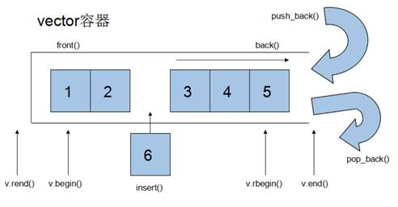
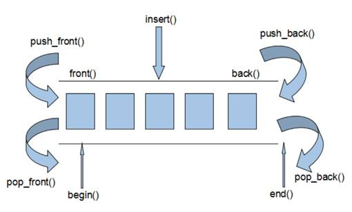
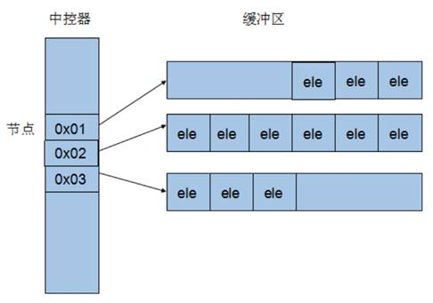
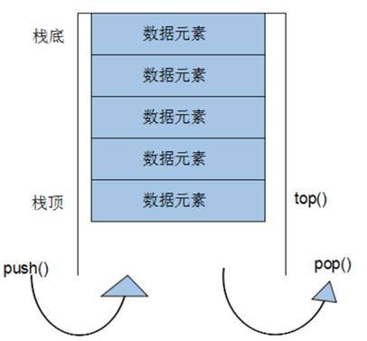
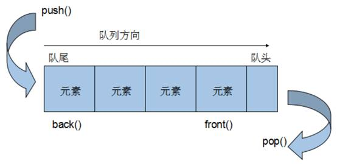
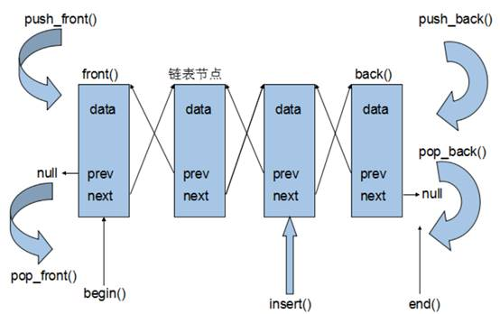

C++提高编程
本阶段主要针对C++泛型编程和STL技术做详细讲解，探讨C++更深层的使用
1 模板
1.1 模板的概念
模板就是建立通用的模具，大大提高复用性
例如生活中的模板
一寸照片模板：
PPT模板：
模板的特点：
模板不可以直接使用，它只是一个框架
模板的通用并不是万能的
1.2 函数模板
C++另一种编程思想称为 泛型编程 ，主要利用的技术就是模板
C++提供两种模板机制:函数模板和类模板
1.2.1 函数模板语法
函数模板作用：
建立一个通用函数，其函数返回值类型和形参类型可以不具体制定，用一个虚拟的类型来代表。
语法：
template<typename T> 函数声明或定义
解释：
template --- 声明创建模板
typename --- 表面其后面的符号是一种数据类型，可以用class代替
T --- 通用的数据类型，名称可以替换，通常为大写字母
示例：
//交换整型函数 void swapInt(int& a, int& b) { int temp = a; a = b; b = temp; } //交换浮点型函数 void swapDouble(double& a, double& b) { double temp = a; a = b; b = temp; } //利用模板提供通用的交换函数 template<typename T> void mySwap(T& a, T& b) { T temp = a; a = b; b = temp; } void test01() { int a = 10; int b = 20; //swapInt(a, b); //利用模板实现交换 //1、自动类型推导 mySwap(a, b); //2、显示指定类型 mySwap<int>(a, b); cout << "a = " << a << endl; cout << "b = " << b << endl; } int main() { test01(); system("pause"); return 0; }
总结：
函数模板利用关键字 template
使用函数模板有两种方式：自动类型推导、显示指定类型
模板的目的是为了提高复用性，将类型参数化
1.2.2 函数模板注意事项
注意事项：
自动类型推导，必须推导出一致的数据类型T,才可以使用
模板必须要确定出T的数据类型，才可以使用
示例：
//利用模板提供通用的交换函数 template<class T> void mySwap(T& a, T& b) { T temp = a; a = b; b = temp; } // 1、自动类型推导，必须推导出一致的数据类型T,才可以使用 void test01() { int a = 10; int b = 20; char c = 'c'; mySwap(a, b); // 正确，可以推导出一致的T //mySwap(a, c); // 错误，推导不出一致的T类型 } // 2、模板必须要确定出T的数据类型，才可以使用 template<class T> void func() { cout << "func 调用" << endl; } void test02() { //func(); //错误，模板不能独立使用，必须确定出T的类型 func<int>(); //利用显示指定类型的方式，给T一个类型，才可以使用该模板 } int main() { test01(); test02(); system("pause"); return 0; }
总结：
使用模板时必须确定出通用数据类型T，并且能够推导出一致的类型
1.2.3 函数模板案例
案例描述：
利用函数模板封装一个排序的函数，可以对不同数据类型数组进行排序
排序规则从大到小，排序算法为选择排序
分别利用char数组和int数组进行测试
示例：
//交换的函数模板 template<typename T> void mySwap(T &a, T&b) { T temp = a; a = b; b = temp; } template<class T> // 也可以替换成typename //利用选择排序，进行对数组从大到小的排序 void mySort(T arr[], int len) { for (int i = 0; i < len; i++) { int max = i; //最大数的下标 for (int j = i + 1; j < len; j++) { if (arr[max] < arr[j]) { max = j; } } if (max != i) //如果最大数的下标不是i，交换两者 { mySwap(arr[max], arr[i]); } } } template<typename T> void printArray(T arr[], int len) { for (int i = 0; i < len; i++) { cout << arr[i] << " "; } cout << endl; } void test01() { //测试char数组 char charArr[] = "bdcfeagh"; int num = sizeof(charArr) / sizeof(char); mySort(charArr, num); printArray(charArr, num); } void test02() { //测试int数组 int intArr[] = { 7, 5, 8, 1, 3, 9, 2, 4, 6 }; int num = sizeof(intArr) / sizeof(int); mySort(intArr, num); printArray(intArr, num); } int main() { test01(); test02(); system("pause"); return 0; }
总结：模板可以提高代码复用，需要熟练掌握
1.2.4 普通函数与函数模板的区别
普通函数与函数模板区别：
普通函数调用时可以发生自动类型转换（隐式类型转换）
函数模板调用时，如果利用自动类型推导，不会发生隐式类型转换
如果利用显示指定类型的方式，可以发生隐式类型转换
示例：
//普通函数 int myAdd01(int a, int b) { return a + b; } //函数模板 template<class T> T myAdd02(T a, T b) { return a + b; } //使用函数模板时，如果用自动类型推导，不会发生自动类型转换,即隐式类型转换 void test01() { int a = 10; int b = 20; char c = 'c'; cout << myAdd01(a, c) << endl; //正确，将char类型的'c'隐式转换为int类型 'c' 对应 ASCII码 99 //myAdd02(a, c); // 报错，使用自动类型推导时，不会发生隐式类型转换 myAdd02<int>(a, c); //正确，如果用显示指定类型，可以发生隐式类型转换 } int main() { test01(); system("pause"); return 0; }
总结：建议使用显示指定类型的方式，调用函数模板，因为可以自己确定通用类型T
1.2.5 普通函数与函数模板的调用规则
调用规则如下：
如果函数模板和普通函数都可以实现，优先调用普通函数
可以通过空模板参数列表来强制调用函数模板
函数模板也可以发生重载
如果函数模板可以产生更好的匹配,优先调用函数模板
示例：
//普通函数与函数模板调用规则 void myPrint(int a, int b) { cout << "调用的普通函数" << endl; } template<typename T> void myPrint(T a, T b) { cout << "调用的模板" << endl; } template<typename T> void myPrint(T a, T b, T c) { cout << "调用重载的模板" << endl; } void test01() { //1、如果函数模板和普通函数都可以实现，优先调用普通函数 // 注意 如果告诉编译器 普通函数是有的，但只是声明没有实现，或者不在当前文件内实现，就会报错找不到 int a = 10; int b = 20; myPrint(a, b); //调用普通函数 //2、可以通过空模板参数列表来强制调用函数模板 myPrint<>(a, b); //调用函数模板 //3、函数模板也可以发生重载 int c = 30; myPrint(a, b, c); //调用重载的函数模板 //4、 如果函数模板可以产生更好的匹配,优先调用函数模板 char c1 = 'a'; char c2 = 'b'; myPrint(c1, c2); //调用函数模板 } int main() { test01(); system("pause"); return 0; }
总结：既然提供了函数模板，最好就不要提供普通函数，否则容易出现二义性
1.2.6 模板的局限性
局限性：
模板的通用性并不是万能的
例如：
template<class T> void f(T a, T b) { a = b; }
在上述代码中提供的赋值操作，如果传入的a和b是一个数组，就无法实现了
再例如：
template<class T> void f(T a, T b) { if(a > b) { ... } }
在上述代码中，如果T的数据类型传入的是像Person这样的自定义数据类型，也无法正常运行
因此C++为了解决这种问题，提供模板的重载，可以为这些特定的类型提供具体化的模板
示例：
#include<iostream> using namespace std; #include <string> class Person { public: Person(string name, int age) { this->m_Name = name; this->m_Age = age; } string m_Name; int m_Age; }; //普通函数模板 template<class T> bool myCompare(T& a, T& b) { if (a == b) { return true; } else { return false; } } //具体化，显示具体化的原型和定意思以template<>开头，并通过名称来指出类型 //具体化优先于常规模板 template<> bool myCompare(Person &p1, Person &p2) { if ( p1.m_Name == p2.m_Name && p1.m_Age == p2.m_Age) { return true; } else { return false; } } void test01() { int a = 10; int b = 20; //内置数据类型可以直接使用通用的函数模板 bool ret = myCompare(a, b); if (ret) { cout << "a == b " << endl; } else { cout << "a != b " << endl; } } void test02() { Person p1("Tom", 10); Person p2("Tom", 10); //自定义数据类型，不会调用普通的函数模板 //可以创建具体化的Person数据类型的模板，用于特殊处理这个类型 bool ret = myCompare(p1, p2); if (ret) { cout << "p1 == p2 " << endl; } else { cout << "p1 != p2 " << endl; } } int main() { test01(); test02(); system("pause"); return 0; }
总结：
利用具体化的模板，可以解决自定义类型的通用化
学习模板并不是为了写模板，而是在STL能够运用系统提供的模板
1.3 类模板
1.3.1 类模板语法
类模板作用：
建立一个通用类，类中的成员 数据类型可以不具体制定，用一个虚拟的类型来代表。
语法：
template<typename T> 类
解释：
template --- 声明创建模板
typename --- 表面其后面的符号是一种数据类型，可以用class代替
T --- 通用的数据类型，名称可以替换，通常为大写字母
示例：
#include <string> //类模板 template<class NameType, class AgeType> class Person { public: Person(NameType name, AgeType age) { this->mName = name; this->mAge = age; } void showPerson() { cout << "name: " << this->mName << " age: " << this->mAge << endl; } public: NameType mName; AgeType mAge; }; void test01() { // 指定NameType 为string类型，AgeType 为 int类型 Person<string, int>P1("孙悟空", 999); P1.showPerson(); } int main() { test01(); system("pause"); return 0; }
总结：类模板和函数模板语法相似，在声明模板template后面加类，此类称为类模板
1.3.2 类模板与函数模板区别
类模板与函数模板区别主要有两点：
类模板没有自动类型推导的使用方式
类模板在模板参数列表中可以有默认参数
示例：
#include <string> //类模板 template<class NameType, class AgeType = int> class Person { public: Person(NameType name, AgeType age) { this->mName = name; this->mAge = age; } void showPerson() { cout << "name: " << this->mName << " age: " << this->mAge << endl; } public: NameType mName; AgeType mAge; }; //1、类模板没有自动类型推导的使用方式 void test01() { // Person p("孙悟空", 1000); // 错误 类模板使用时候，不可以用自动类型推导 Person <string ,int>p("孙悟空", 1000); //必须使用显示指定类型的方式，使用类模板 p.showPerson(); } //2、类模板在模板参数列表中可以有默认参数 void test02() { Person <string> p("猪八戒", 999); //类模板中的模板参数列表 可以指定默认参数 p.showPerson(); } int main() { test01(); test02(); system("pause"); return 0; }
总结：
类模板使用只能用显示指定类型方式
类模板中的模板参数列表可以有默认参数
1.3.3 类模板中成员函数创建时机
类模板中成员函数和普通类中成员函数创建时机是有区别的：
普通类中的成员函数一开始就可以创建
类模板中的成员函数在调用时才创建
示例：
class Person1 { public: void showPerson1() { cout << "Person1 show" << endl; } }; class Person2 { public: void showPerson2() { cout << "Person2 show" << endl; } }; template<class T> class MyClass { public: T obj; //类模板中的成员函数，并不是一开始就创建的，而是在模板调用时再生成 void fun1() { obj.showPerson1(); } void fun2() { obj.showPerson2(); } }; void test01() { MyClass<Person1> m; m.fun1(); //m.fun2();//编译会出错，说明函数调用才会去创建成员函数 } int main() { test01(); system("pause"); return 0; }
总结：类模板中的成员函数并不是一开始就创建的，在调用时才去创建
1.3.4 类模板对象做函数参数
学习目标：
类模板实例化出的对象，向函数传参的方式
一共有三种传入方式：
指定传入的类型 --- 直接显示对象的数据类型
参数模板化 --- 将对象中的参数变为模板进行传递
整个类模板化 --- 将这个对象类型 模板化进行传递
示例：
#include <string> //类模板 template<class NameType, class AgeType = int> class Person { public: Person(NameType name, AgeType age) { this->mName = name; this->mAge = age; } void showPerson() { cout << "name: " << this->mName << " age: " << this->mAge << endl; } public: NameType mName; AgeType mAge; }; //1、指定传入的类型 void printPerson1(Person<string, int> &p) { p.showPerson(); } void test01() { Person <string, int >p("孙悟空", 100); printPerson1(p); } //2、参数模板化 template <class T1, class T2> void printPerson2(Person<T1, T2>&p) { p.showPerson(); cout << "T1的类型为： " << typeid(T1).name() << endl; cout << "T2的类型为： " << typeid(T2).name() << endl; } void test02() { Person <string, int >p("猪八戒", 90); printPerson2(p); } //3、整个类模板化 template<class T> void printPerson3(T & p) { cout << "T的类型为： " << typeid(T).name() << endl; p.showPerson(); } void test03() { Person <string, int >p("唐僧", 30); printPerson3(p); } int main() { test01(); test02(); test03(); system("pause"); return 0; }
总结：
通过类模板创建的对象，可以有三种方式向函数中进行传参
使用比较广泛是第一种：指定传入的类型
1.3.5 类模板与继承
当类模板碰到继承时，需要注意一下几点：
当子类继承的父类是一个类模板时，子类在声明的时候，要指定出父类中T的类型
如果不指定，编译器无法给子类分配内存
如果想灵活指定出父类中T的类型，子类也需变为类模板
示例：
template<class T> class Base { T m; }; //class Son:public Base //错误，c++编译需要给子类分配内存，必须知道父类中T的类型才可以向下继承 class Son :public Base<int> //必须指定一个类型 { }; void test01() { Son c; } //类模板继承类模板 ,可以用T2指定父类中的T类型 template<class T1, class T2> class Son2 :public Base<T2> { public: Son2() { cout << typeid(T1).name() << endl; cout << typeid(T2).name() << endl; } }; void test02() { Son2<int, char> child1; } int main() { test01(); test02(); system("pause"); return 0; }
总结：如果父类是类模板，子类需要指定出父类中T的数据类型
1.3.6 类模板成员函数类外实现
学习目标：能够掌握类模板中的成员函数类外实现
示例：
#include <string> //类模板中成员函数类外实现 template<class T1, class T2> class Person { public: //成员函数类内声明 Person(T1 name, T2 age); void showPerson(); public: T1 m_Name; T2 m_Age; }; //构造函数 类外实现 template<class T1, class T2> Person<T1, T2>::Person(T1 name, T2 age) { this->m_Name = name; this->m_Age = age; } //成员函数 类外实现 template<class T1, class T2> void Person<T1, T2>::showPerson() { cout << "姓名: " << this->m_Name << " 年龄:" << this->m_Age << endl; } void test01() { Person<string, int> p("Tom", 20); p.showPerson(); } int main() { test01(); system("pause"); return 0; }
总结：类模板中成员函数类外实现时，需要加上模板参数列表
1.3.7 类模板分文件编写
学习目标：
掌握类模板成员函数分文件编写产生的问题以及解决方式
问题：
类模板中成员函数创建时机是在调用阶段，导致分文件编写时链接不到
解决：
解决方式1：直接包含.cpp源文件
解决方式2：将声明和实现写到同一个文件中，并更改后缀名为.hpp，hpp是约定的名称，并不是强制
示例：
person.hpp中代码：
#pragma once #include <iostream> using namespace std; #include <string> template<class T1, class T2> class Person { public: Person(T1 name, T2 age); void showPerson(); public: T1 m_Name; T2 m_Age; }; //构造函数 类外实现 template<class T1, class T2> Person<T1, T2>::Person(T1 name, T2 age) { this->m_Name = name; this->m_Age = age; } //成员函数 类外实现 template<class T1, class T2> void Person<T1, T2>::showPerson() { cout << "姓名: " << this->m_Name << " 年龄:" << this->m_Age << endl; }
类模板分文件编写.cpp中代码
#include<iostream> using namespace std; //#include "person.h" #include "person.cpp" //解决方式1，包含cpp源文件 //解决方式2，将声明和实现写到一起，文件后缀名改为.hpp #include "person.hpp" void test01() { Person<string, int> p("Tom", 10); p.showPerson(); } int main() { test01(); system("pause"); return 0; }
总结：主流的解决方式是第二种，将类模板成员函数写到一起，并将后缀名改为.hpp
1.3.8 类模板与友元
学习目标：
掌握类模板配合友元函数的类内和类外实现
全局函数类内实现 - 直接在类内声明友元即可
全局函数类外实现 - 需要提前让编译器知道全局函数的存在
示例：
#include <string> //2、全局函数配合友元 类外实现 - 先做函数模板声明，下方在做函数模板定义，在做友元 template<class T1, class T2> class Person; //如果声明了函数模板，可以将实现写到后面，否则需要将实现体写到类的前面让编译器提前看到 //template<class T1, class T2> void printPerson2(Person<T1, T2> & p); template<class T1, class T2> void printPerson2(Person<T1, T2> & p) { cout << "类外实现 ---- 姓名： " << p.m_Name << " 年龄：" << p.m_Age << endl; } template<class T1, class T2> class Person { //1、全局函数配合友元 类内实现 friend void printPerson(Person<T1, T2> & p) { cout << "姓名： " << p.m_Name << " 年龄：" << p.m_Age << endl; } //全局函数配合友元 类外实现 friend void printPerson2<>(Person<T1, T2> & p); public: Person(T1 name, T2 age) { this->m_Name = name; this->m_Age = age; } private: T1 m_Name; T2 m_Age; }; //1、全局函数在类内实现 void test01() { Person <string, int >p("Tom", 20); printPerson(p); } //2、全局函数在类外实现 void test02() { Person <string, int >p("Jerry", 30); printPerson2(p); } int main() { //test01(); test02(); system("pause"); return 0; }
总结：建议全局函数做类内实现，用法简单，而且编译器可以直接识别
1.3.9 类模板案例
案例描述: 实现一个通用的数组类，要求如下：
可以对内置数据类型以及自定义数据类型的数据进行存储
将数组中的数据存储到堆区
构造函数中可以传入数组的容量
提供对应的拷贝构造函数以及operator=防止浅拷贝问题
提供尾插法和尾删法对数组中的数据进行增加和删除
可以通过下标的方式访问数组中的元素
可以获取数组中当前元素个数和数组的容量
示例：
myArray.hpp中代码
#pragma once #include <iostream> using namespace std; template<class T> class MyArray { public: //构造函数 MyArray(int capacity) { this->m_Capacity = capacity; this->m_Size = 0; pAddress = new T[this->m_Capacity]; } //拷贝构造 MyArray(const MyArray & arr) { this->m_Capacity = arr.m_Capacity; this->m_Size = arr.m_Size; this->pAddress = new T[this->m_Capacity]; for (int i = 0; i < this->m_Size; i++) { //如果T为对象，而且还包含指针，必须需要重载 = 操作符，因为这个等号不是 构造 而是赋值， // 普通类型可以直接= 但是指针类型需要深拷贝 this->pAddress[i] = arr.pAddress[i]; } } //重载= 操作符 防止浅拷贝问题 MyArray& operator=(const MyArray& myarray) { if (this->pAddress != NULL) { delete[] this->pAddress; this->m_Capacity = 0; this->m_Size = 0; } this->m_Capacity = myarray.m_Capacity; this->m_Size = myarray.m_Size; this->pAddress = new T[this->m_Capacity]; for (int i = 0; i < this->m_Size; i++) { this->pAddress[i] = myarray[i]; } return *this; } //重载[] 操作符 arr[0] T& operator [](int index) { return this->pAddress[index]; //不考虑越界，用户自己去处理 } //尾插法 void Push_back(const T & val) { if (this->m_Capacity == this->m_Size) { return; } this->pAddress[this->m_Size] = val; this->m_Size++; } //尾删法 void Pop_back() { if (this->m_Size == 0) { return; } this->m_Size--; } //获取数组容量 int getCapacity() { return this->m_Capacity; } //获取数组大小 int getSize() { return this->m_Size; } //析构 ~MyArray() { if (this->pAddress != NULL) { delete[] this->pAddress; this->pAddress = NULL; this->m_Capacity = 0; this->m_Size = 0; } } private: T * pAddress; //指向一个堆空间，这个空间存储真正的数据 int m_Capacity; //容量 int m_Size; // 大小 };
类模板案例—数组类封装.cpp中
#include "myArray.hpp" #include <string> void printIntArray(MyArray<int>& arr) { for (int i = 0; i < arr.getSize(); i++) { cout << arr[i] << " "; } cout << endl; } //测试内置数据类型 void test01() { MyArray<int> array1(10); for (int i = 0; i < 10; i++) { array1.Push_back(i); } cout << "array1打印输出：" << endl; printIntArray(array1); cout << "array1的大小：" << array1.getSize() << endl; cout << "array1的容量：" << array1.getCapacity() << endl; cout << "--------------------------" << endl; MyArray<int> array2(array1); array2.Pop_back(); cout << "array2打印输出：" << endl; printIntArray(array2); cout << "array2的大小：" << array2.getSize() << endl; cout << "array2的容量：" << array2.getCapacity() << endl; } //测试自定义数据类型 class Person { public: Person() {} Person(string name, int age) { this->m_Name = name; this->m_Age = age; } public: string m_Name; int m_Age; }; void printPersonArray(MyArray<Person>& personArr) { for (int i = 0; i < personArr.getSize(); i++) { cout << "姓名：" << personArr[i].m_Name << " 年龄： " << personArr[i].m_Age << endl; } } void test02() { //创建数组 MyArray<Person> pArray(10); Person p1("孙悟空", 30); Person p2("韩信", 20); Person p3("妲己", 18); Person p4("王昭君", 15); Person p5("赵云", 24); //插入数据 pArray.Push_back(p1); pArray.Push_back(p2); pArray.Push_back(p3); pArray.Push_back(p4); pArray.Push_back(p5); printPersonArray(pArray); cout << "pArray的大小：" << pArray.getSize() << endl; cout << "pArray的容量：" << pArray.getCapacity() << endl; } int main() { //test01(); test02(); system("pause"); return 0; }
总结：
能够利用所学知识点实现通用的数组
2 STL初识
2.1 STL的诞生
长久以来，软件界一直希望建立一种可重复利用的东西
C++的面向对象和泛型编程思想，目的就是复用性的提升
大多情况下，数据结构和算法都未能有一套标准,导致被迫从事大量重复工作
为了建立数据结构和算法的一套标准,诞生了STL
2.2 STL基本概念
STL(Standard Template Library,标准模板库)
STL 从广义上分为: 容器(container) 算法(algorithm) 迭代器(iterator)
容器和算法之间通过迭代器进行无缝连接。
STL 几乎所有的代码都采用了模板类或者模板函数
2.3 STL六大组件
STL大体分为六大组件，分别是:容器、算法、迭代器、仿函数、适配器（配接器）、空间配置器
容器：各种数据结构，如vector、list、deque、set、map等,用来存放数据。
算法：各种常用的算法，如sort、find、copy、for_each等
迭代器：扮演了容器与算法之间的胶合剂。
仿函数：行为类似函数，可作为算法的某种策略。
适配器：一种用来修饰容器或者仿函数或迭代器接口的东西。
空间配置器：负责空间的配置与管理。
2.4 STL中容器、算法、迭代器
容器：置物之所也
STL容器就是将运用最广泛的一些数据结构实现出来
常用的数据结构：数组, 链表,树, 栈, 队列, 集合, 映射表 等
这些容器分为序列式容器和关联式容器两种:
序列式容器:强调值的排序，序列式容器中的每个元素均有固定的位置。 关联式容器:二叉树结构，各元素之间没有严格的物理上的顺序关系
算法：问题之解法也
有限的步骤，解决逻辑或数学上的问题，这一门学科我们叫做算法(Algorithms)
算法分为:质变算法和非质变算法。
质变算法：是指运算过程中会更改区间内的元素的内容。例如拷贝，替换，删除等等
非质变算法：是指运算过程中不会更改区间内的元素内容，例如查找、计数、遍历、寻找极值等等
迭代器：容器和算法之间粘合剂
提供一种方法，使之能够依序寻访某个容器所含的各个元素，而又无需暴露该容器的内部表示方式。
每个容器都有自己专属的迭代器
迭代器使用非常类似于指针，初学阶段我们可以先理解迭代器为指针
迭代器种类：
种类 功能 支持运算 输入迭代器 对数据的只读访问 只读，支持++、==、！= 输出迭代器 对数据的只写访问 只写，支持++ 前向迭代器 读写操作，并能向前推进迭代器 读写，支持++、==、！= 双向迭代器 读写操作，并能向前和向后操作 读写，支持++、--， 随机访问迭代器 读写操作，可以以跳跃的方式访问任意数据，功能最强的迭代器 读写，支持++、--、[n]、-n、<、<=、>、>= 常用的容器中迭代器种类为双向迭代器，和随机访问迭代器
2.5 容器算法迭代器初识
了解STL中容器、算法、迭代器概念之后，我们利用代码感受STL的魅力
STL中最常用的容器为Vector，可以理解为数组，下面我们将学习如何向这个容器中插入数据、并遍历这个容器
2.5.1 vector存放内置数据类型
容器：
vector算法：
for_each迭代器：
vector<int>::iterator示例：
#include <vector> #include <algorithm> void MyPrint(int val) { cout << val << endl; } void test01() { //创建vector容器对象，并且通过模板参数指定容器中存放的数据的类型 vector<int> v; //向容器中放数据 v.push_back(10); v.push_back(20); v.push_back(30); v.push_back(40); //每一个容器都有自己的迭代器，迭代器是用来遍历容器中的元素 //v.begin()返回迭代器，这个迭代器指向容器中第一个数据 //v.end()返回迭代器，这个迭代器指向容器元素的最后一个元素的下一个位置 //vector<int>::iterator 拿到vector<int>这种容器的迭代器类型 vector<int>::iterator pBegin = v.begin(); vector<int>::iterator pEnd = v.end(); //第一种遍历方式： while (pBegin != pEnd) { cout << *pBegin << endl; pBegin++; } //第二种遍历方式： for (vector<int>::iterator it = v.begin(); it != v.end(); it++) { cout << *it << endl; } cout << endl; //第三种遍历方式： //使用STL提供标准遍历算法 头文件 algorithm for_each(v.begin(), v.end(), MyPrint); } int main() { test01(); system("pause"); return 0; }
2.5.2 Vector存放自定义数据类型
学习目标：vector中存放自定义数据类型，并打印输出
示例：
#include <vector> #include <string> //自定义数据类型 class Person { public: Person(string name, int age) { mName = name; mAge = age; } public: string mName; int mAge; }; //存放对象 void test01() { vector<Person> v; //创建数据 Person p1("aaa", 10); Person p2("bbb", 20); Person p3("ccc", 30); Person p4("ddd", 40); Person p5("eee", 50); v.push_back(p1); v.push_back(p2); v.push_back(p3); v.push_back(p4); v.push_back(p5); for (vector<Person>::iterator it = v.begin(); it != v.end(); it++) { cout << "Name:" << (*it).mName << " Age:" << (*it).mAge << endl; } } //放对象指针 void test02() { vector<Person*> v; //创建数据 Person p1("aaa", 10); Person p2("bbb", 20); Person p3("ccc", 30); Person p4("ddd", 40); Person p5("eee", 50); v.push_back(&p1); v.push_back(&p2); v.push_back(&p3); v.push_back(&p4); v.push_back(&p5); for (vector<Person*>::iterator it = v.begin(); it != v.end(); it++) { Person * p = (*it); cout << "Name:" << p->mName << " Age:" << (*it)->mAge << endl; } } int main() { test01(); test02(); system("pause"); return 0; }
2.5.3 Vector容器嵌套容器
学习目标：容器中嵌套容器，我们将所有数据进行遍历输出
示例：
#include <vector> //容器嵌套容器 void test01() { vector< vector<int> > v; vector<int> v1; vector<int> v2; vector<int> v3; vector<int> v4; for (int i = 0; i < 4; i++) { v1.push_back(i + 1); v2.push_back(i + 2); v3.push_back(i + 3); v4.push_back(i + 4); } //将容器元素插入到vector v中 v.push_back(v1); v.push_back(v2); v.push_back(v3); v.push_back(v4); for (vector<vector<int>>::iterator it = v.begin(); it != v.end(); it++) { for (vector<int>::iterator vit = (*it).begin(); vit != (*it).end(); vit++) { cout << *vit << " "; } cout << endl; } } int main() { test01(); system("pause"); return 0; }
3 STL- 常用容器
3.1 string容器
3.1.1 string基本概念
本质：
string是C++风格的字符串，而string本质上是一个类
string和char * 区别：
char * 是一个指针
string是一个类，类内部封装了char\，管理这个字符串，是一个char型的容器。
特点：
string 类内部封装了很多成员方法
例如：查找find，拷贝copy，删除delete 替换replace，插入insert
string管理char*所分配的内存，不用担心复制越界和取值越界等，由类内部进行负责
3.1.2 string构造函数
构造函数原型：
string();//创建一个空的字符串 例如: string str;string(const char* s);//使用字符串s初始化string(const string& str);//使用一个string对象初始化另一个string对象string(int n, char c);//使用n个字符c初始化示例：
#include <string> //string构造 void test01() { string s1; //创建空字符串，调用无参构造函数 cout << "str1 = " << s1 << endl; const char* str = "hello world"; string s2(str); //把c_string转换成了string cout << "str2 = " << s2 << endl; string s3(s2); //调用拷贝构造函数 cout << "str3 = " << s3 << endl; string s4(10, 'a'); cout << "str3 = " << s3 << endl; } int main() { test01(); system("pause"); return 0; }
总结：string的多种构造方式没有可比性，灵活使用即可
3.1.3 string赋值操作
功能描述：
给string字符串进行赋值
赋值的函数原型：
string& operator=(const char* s);//char*类型字符串 赋值给当前的字符串string& operator=(const string &s);//把字符串s赋给当前的字符串string& operator=(char c);//字符赋值给当前的字符串string& assign(const char *s);//把字符串s赋给当前的字符串string& assign(const char *s, int n);//把字符串s的前n个字符赋给当前的字符串string& assign(const string &s);//把字符串s赋给当前字符串string& assign(int n, char c);//用n个字符c赋给当前字符串示例：
//赋值 void test01() { string str1; str1 = "hello world"; cout << "str1 = " << str1 << endl; string str2; str2 = str1; cout << "str2 = " << str2 << endl; string str3; str3 = 'a'; cout << "str3 = " << str3 << endl; string str4; str4.assign("hello c++"); cout << "str4 = " << str4 << endl; string str5; str5.assign("hello c++",5); cout << "str5 = " << str5 << endl; string str6; str6.assign(str5); cout << "str6 = " << str6 << endl; string str7; str7.assign(5, 'x'); cout << "str7 = " << str7 << endl; } int main() { test01(); system("pause"); return 0; }
总结：
string的赋值方式很多，
operator=这种方式是比较实用的3.1.4 string字符串拼接
功能描述：
实现在字符串末尾拼接字符串
函数原型：
string& operator+=(const char* str);//重载+=操作符string& operator+=(const char c);//重载+=操作符string& operator+=(const string& str);//重载+=操作符string& append(const char *s);//把字符串s连接到当前字符串结尾string& append(const char *s, int n);//把字符串s的前n个字符连接到当前字符串结尾string& append(const string &s);//同operator+=(const string& str)string& append(const string &s, int pos, int n);//字符串s中从pos开始的n个字符连接到字符串结尾示例：
//字符串拼接 void test01() { string str1 = "我"; str1 += "爱玩游戏"; cout << "str1 = " << str1 << endl; str1 += ':'; cout << "str1 = " << str1 << endl; string str2 = "LOL DNF"; str1 += str2; cout << "str1 = " << str1 << endl; string str3 = "I"; str3.append(" love "); str3.append("game abcde", 4); //str3.append(str2); str3.append(str2, 4, 3); // 从下标4位置开始 ，截取3个字符，拼接到字符串末尾 cout << "str3 = " << str3 << endl; } int main() { test01(); system("pause"); return 0; }
总结：字符串拼接的重载版本很多，初学阶段记住几种即可
3.1.5 string查找和替换
功能描述：
查找：查找指定字符串是否存在
替换：在指定的位置替换字符串
函数原型：
int find(const string& str, int pos = 0) const;//查找str第一次出现位置,从pos开始查找int find(const char* s, int pos = 0) const;//查找s第一次出现位置,从pos开始查找int find(const char* s, int pos, int n) const;//从pos位置查找s的前n个字符第一次位置int find(const char c, int pos = 0) const;//查找字符c第一次出现位置int rfind(const string& str, int pos = npos) const;//查找str最后一次位置,从pos开始查找int rfind(const char* s, int pos = npos) const;//查找s最后一次出现位置,从pos开始查找int rfind(const char* s, int pos, int n) const;//从pos查找s的前n个字符最后一次位置int rfind(const char c, int pos = 0) const;//查找字符c最后一次出现位置string& replace(int pos, int n, const string& str);//替换从pos开始n个字符为字符串strstring& replace(int pos, int n,const char* s);//替换从pos开始的n个字符为字符串s示例：
//查找和替换 void test01() { //查找 string str1 = "abcdefgde"; int pos = str1.find("de"); if (pos == -1) { cout << "未找到" << endl; } else { cout << "pos = " << pos << endl; } pos = str1.rfind("de"); cout << "pos = " << pos << endl; } void test02() { //替换 string str1 = "abcdefgde"; str1.replace(1, 3, "1111"); cout << "str1 = " << str1 << endl; } int main() { //test01(); //test02(); system("pause"); return 0; }
总结：
find查找是从左往后，rfind从右往左
find找到字符串后返回查找的第一个字符位置，找不到返回-1
replace在替换时，要指定从哪个位置起，多少个字符，替换成什么样的字符串
3.1.6 string字符串比较
功能描述：
字符串之间的比较
比较方式：
字符串比较是按字符的ASCII码进行对比
= 返回 0
\> 返回 1
< 返回 -1
函数原型：
int compare(const string &s) const;//与字符串s比较int compare(const char *s) const;//与字符串s比较示例：
//字符串比较 void test01() { string s1 = "hello"; string s2 = "aello"; int ret = s1.compare(s2); if (ret == 0) { cout << "s1 等于 s2" << endl; } else if (ret > 0) { cout << "s1 大于 s2" << endl; } else { cout << "s1 小于 s2" << endl; } } int main() { test01(); system("pause"); return 0; }
总结：字符串对比主要是用于比较两个字符串是否相等，判断谁大谁小的意义并不是很大
3.1.7 string字符存取
string中单个字符存取方式有两种
char& operator[](int n);//通过[]方式取字符char& at(int n);//通过at方法获取字符示例：
void test01() { string str = "hello world"; for (int i = 0; i < str.size(); i++) { cout << str[i] << " "; } cout << endl; for (int i = 0; i < str.size(); i++) { cout << str.at(i) << " "; } cout << endl; //字符修改 str[0] = 'x'; str.at(1) = 'x'; cout << str << endl; } int main() { test01(); system("pause"); return 0; }
总结：string字符串中单个字符存取有两种方式，利用 [ ] 或 at
3.1.8 string插入和删除
功能描述：
对string字符串进行插入和删除字符操作
函数原型：
string& insert(int pos, const char* s);//插入字符串string& insert(int pos, const string& str);//插入字符串string& insert(int pos, int n, char c);//在指定位置插入n个字符cstring& erase(int pos, int n = npos);//删除从Pos开始的n个字符示例：
//字符串插入和删除 void test01() { string str = "hello"; str.insert(1, "111"); cout << str << endl; str.erase(1, 3); //从1号位置开始3个字符 cout << str << endl; } int main() { test01(); system("pause"); return 0; }
总结：插入和删除的起始下标都是从0开始
3.1.9 string子串
功能描述：
从字符串中获取想要的子串
函数原型：
string substr(int pos = 0, int n = npos) const;//返回由pos开始的n个字符组成的字符串示例：
//子串 void test01() { string str = "abcdefg"; string subStr = str.substr(1, 3); cout << "subStr = " << subStr << endl; string email = "hello@sina.com"; int pos = email.find("@"); string username = email.substr(0, pos); cout << "username: " << username << endl; } int main() { test01(); system("pause"); return 0; }
总结：灵活的运用求子串功能，可以在实际开发中获取有效的信息
3.2 vector容器
3.2.1 vector基本概念
功能：
vector数据结构和数组非常相似，也称为单端数组
vector与普通数组区别：
不同之处在于数组是静态空间，而vector可以动态扩展
动态扩展：
并不是在原空间之后续接新空间，而是找更大的内存空间，然后将原数据拷贝新空间，释放原空间

vector容器的迭代器是支持随机访问的迭代器
3.2.2 vector构造函数
功能描述：
创建vector容器
函数原型：
vector<T> v;//采用模板实现类实现，默认构造函数vector(v.begin(), v.end());//将v[begin(), end())区间中的元素拷贝给本身。vector(n, elem);//构造函数将n个elem拷贝给本身。vector(const vector &vec);//拷贝构造函数。示例：
#include <vector> void printVector(vector<int>& v) { for (vector<int>::iterator it = v.begin(); it != v.end(); it++) { cout << *it << " "; } cout << endl; } void test01() { vector<int> v1; //无参构造 for (int i = 0; i < 10; i++) { v1.push_back(i); } printVector(v1); vector<int> v2(v1.begin(), v1.end()); printVector(v2); vector<int> v3(10, 100); printVector(v3); vector<int> v4(v3); printVector(v4); } int main() { test01(); system("pause"); return 0; }
总结：vector的多种构造方式没有可比性，灵活使用即可
3.2.3 vector赋值操作
功能描述：
给vector容器进行赋值
函数原型：
vector& operator=(const vector &vec);//重载等号操作符assign(beg, end);//将[beg, end)区间中的数据拷贝赋值给本身。assign(n, elem);//将n个elem拷贝赋值给本身。示例：
#include <vector> void printVector(vector<int>& v) { for (vector<int>::iterator it = v.begin(); it != v.end(); it++) { cout << *it << " "; } cout << endl; } //赋值操作 void test01() { vector<int> v1; //无参构造 for (int i = 0; i < 10; i++) { v1.push_back(i); } printVector(v1); vector<int>v2; v2 = v1; printVector(v2); vector<int>v3; v3.assign(v1.begin(), v1.end()); printVector(v3); vector<int>v4; v4.assign(10, 100); printVector(v4); } int main() { test01(); system("pause"); return 0; }
总结： vector赋值方式比较简单，使用operator=，或者assign都可以
3.2.4 vector容量和大小
功能描述：
对vector容器的容量和大小操作
函数原型：
empty();//判断容器是否为空capacity();//容器的容量size();//返回容器中元素的个数resize(int num);//重新指定容器的长度为num，若容器变长，则以默认值填充新位置。//如果容器变短，则末尾超出容器长度的元素被删除。
resize(int num, elem);//重新指定容器的长度为num，若容器变长，则以elem值填充新位置。//如果容器变短，则末尾超出容器长度的元素被删除
示例：
#include <vector> void printVector(vector<int>& v) { for (vector<int>::iterator it = v.begin(); it != v.end(); it++) { cout << *it << " "; } cout << endl; } void test01() { vector<int> v1; for (int i = 0; i < 10; i++) { v1.push_back(i); } printVector(v1); if (v1.empty()) { cout << "v1为空" << endl; } else { cout << "v1不为空" << endl; cout << "v1的容量 = " << v1.capacity() << endl; cout << "v1的大小 = " << v1.size() << endl; } //resize 重新指定大小 ，若指定的更大，默认用0填充新位置，可以利用重载版本替换默认填充 v1.resize(15,10); printVector(v1); //resize 重新指定大小 ，若指定的更小，超出部分元素被删除 v1.resize(5); printVector(v1); } int main() { test01(); system("pause"); return 0; }
总结：
判断是否为空 --- empty
返回元素个数 --- size
返回容器容量 --- capacity
重新指定大小 --- resize
3.2.5 vector插入和删除
功能描述：
对vector容器进行插入、删除操作
函数原型：
push_back(ele);//尾部插入元素elepop_back();//删除最后一个元素insert(const_iterator pos, ele);//迭代器指向位置pos插入元素eleinsert(const_iterator pos, int count,ele);//迭代器指向位置pos插入count个元素eleerase(const_iterator pos);//删除迭代器指向的元素erase(const_iterator start, const_iterator end);//删除迭代器从start到end之间的元素clear();//删除容器中所有元素示例：
#include <vector> void printVector(vector<int>& v) { for (vector<int>::iterator it = v.begin(); it != v.end(); it++) { cout << *it << " "; } cout << endl; } //插入和删除 void test01() { vector<int> v1; //尾插 v1.push_back(10); v1.push_back(20); v1.push_back(30); v1.push_back(40); v1.push_back(50); printVector(v1); //尾删 v1.pop_back(); printVector(v1); //插入 v1.insert(v1.begin(), 100); printVector(v1); v1.insert(v1.begin(), 2, 1000); printVector(v1); //删除 v1.erase(v1.begin()); printVector(v1); //清空 v1.erase(v1.begin(), v1.end()); v1.clear(); printVector(v1); } int main() { test01(); system("pause"); return 0; }
总结：
尾插 --- push_back
尾删 --- pop_back
插入 --- insert (位置迭代器)
删除 --- erase （位置迭代器）
清空 --- clear
3.2.6 vector数据存取
功能描述：
对vector中的数据的存取操作
函数原型：
at(int idx);//返回索引idx所指的数据operator[];//返回索引idx所指的数据front();//返回容器中第一个数据元素back();//返回容器中最后一个数据元素示例：
#include <vector> void test01() { vector<int>v1; for (int i = 0; i < 10; i++) { v1.push_back(i); } for (int i = 0; i < v1.size(); i++) { cout << v1[i] << " "; } cout << endl; for (int i = 0; i < v1.size(); i++) { cout << v1.at(i) << " "; } cout << endl; cout << "v1的第一个元素为： " << v1.front() << endl; cout << "v1的最后一个元素为： " << v1.back() << endl; } int main() { test01(); system("pause"); return 0; }
总结：
除了用迭代器获取vector容器中元素，[ ]和at也可以
front返回容器第一个元素
back返回容器最后一个元素
3.2.7 vector互换容器
功能描述：
实现两个容器内元素进行互换
函数原型：
swap(vec);// 将vec与本身的元素互换示例：
#include <vector> void printVector(vector<int>& v) { for (vector<int>::iterator it = v.begin(); it != v.end(); it++) { cout << *it << " "; } cout << endl; } void test01() { vector<int>v1; for (int i = 0; i < 10; i++) { v1.push_back(i); } printVector(v1); vector<int>v2; for (int i = 10; i > 0; i--) { v2.push_back(i); } printVector(v2); //互换容器 cout << "互换后" << endl; v1.swap(v2); printVector(v1); printVector(v2); } void test02() { vector<int> v; for (int i = 0; i < 100000; i++) { v.push_back(i); } cout << "v的容量为：" << v.capacity() << endl; cout << "v的大小为：" << v.size() << endl; v.resize(3); cout << "v的容量为：" << v.capacity() << endl; cout << "v的大小为：" << v.size() << endl; //收缩内存 vector<int>(v).swap(v); //匿名对象 cout << "v的容量为：" << v.capacity() << endl; cout << "v的大小为：" << v.size() << endl; } int main() { test01(); test02(); system("pause"); return 0; }
总结：swap可以使两个容器互换，可以达到实用的收缩内存效果
3.2.8 vector预留空间
功能描述：
减少vector在动态扩展容量时的扩展次数
函数原型：
reserve(int len);//容器预留len个元素长度，预留位置不初始化，元素不可访问。示例：
#include <vector> void test01() { vector<int> v; //预留空间 v.reserve(100000); int num = 0; int* p = NULL; for (int i = 0; i < 100000; i++) { v.push_back(i); if (p != &v[0]) { p = &v[0]; num++; } } cout << "num:" << num << endl; } int main() { test01(); system("pause"); return 0; }
总结：如果数据量较大，可以一开始利用reserve预留空间
3.3 deque容器
3.3.1 deque容器基本概念
功能：
双端数组，可以对头端进行插入删除操作
deque与vector区别：
vector对于头部的插入删除效率低，数据量越大，效率越低
deque相对而言，对头部的插入删除速度回比vector快
vector访问元素时的速度会比deque快,这和两者内部实现有关

deque内部工作原理:
deque内部有个中控器，维护每段缓冲区中的内容，缓冲区中存放真实数据
中控器维护的是每个缓冲区的地址，使得使用deque时像一片连续的内存空间

deque容器的迭代器也是支持随机访问的
3.3.2 deque构造函数
功能描述：
deque容器构造
函数原型：
deque<T>deqT; //默认构造形式deque(beg, end);//构造函数将[beg, end)区间中的元素拷贝给本身。deque(n, elem);//构造函数将n个elem拷贝给本身。deque(const deque &deq);//拷贝构造函数示例：
#include <deque> void printDeque(const deque<int>& d) { for (deque<int>::const_iterator it = d.begin(); it != d.end(); it++) { cout << *it << " "; } cout << endl; } //deque构造 void test01() { deque<int> d1; //无参构造函数 for (int i = 0; i < 10; i++) { d1.push_back(i); } printDeque(d1); deque<int> d2(d1.begin(),d1.end()); printDeque(d2); deque<int>d3(10,100); printDeque(d3); deque<int>d4 = d3; printDeque(d4); } int main() { test01(); system("pause"); return 0; }
总结：deque容器和vector容器的构造方式几乎一致，灵活使用即可
3.3.3 deque赋值操作
功能描述：
给deque容器进行赋值
函数原型：
deque& operator=(const deque &deq);//重载等号操作符assign(beg, end);//将[beg, end)区间中的数据拷贝赋值给本身。assign(n, elem);//将n个elem拷贝赋值给本身。示例：
#include <deque> void printDeque(const deque<int>& d) { for (deque<int>::const_iterator it = d.begin(); it != d.end(); it++) { cout << *it << " "; } cout << endl; } //赋值操作 void test01() { deque<int> d1; for (int i = 0; i < 10; i++) { d1.push_back(i); } printDeque(d1); deque<int>d2; d2 = d1; printDeque(d2); deque<int>d3; d3.assign(d1.begin(), d1.end()); printDeque(d3); deque<int>d4; d4.assign(10, 100); printDeque(d4); } int main() { test01(); system("pause"); return 0; }
总结：deque赋值操作也与vector相同，需熟练掌握
3.3.4 deque大小操作
功能描述：
对deque容器的大小进行操作
函数原型：
deque.empty();//判断容器是否为空deque.size();//返回容器中元素的个数deque.resize(num);//重新指定容器的长度为num,若容器变长，则以默认值填充新位置。//如果容器变短，则末尾超出容器长度的元素被删除。
deque.resize(num, elem);//重新指定容器的长度为num,若容器变长，则以elem值填充新位置。//如果容器变短，则末尾超出容器长度的元素被删除。
示例：
#include <deque> void printDeque(const deque<int>& d) { for (deque<int>::const_iterator it = d.begin(); it != d.end(); it++) { cout << *it << " "; } cout << endl; } //大小操作 void test01() { deque<int> d1; for (int i = 0; i < 10; i++) { d1.push_back(i); } printDeque(d1); //判断容器是否为空 if (d1.empty()) { cout << "d1为空!" << endl; } else { cout << "d1不为空!" << endl; //统计大小 cout << "d1的大小为：" << d1.size() << endl; } //重新指定大小 d1.resize(15, 1); printDeque(d1); d1.resize(5); printDeque(d1); } int main() { test01(); system("pause"); return 0; }
总结：
deque没有容量的概念
判断是否为空 --- empty
返回元素个数 --- size
重新指定个数 --- resize
3.3.5 deque 插入和删除
功能描述：
向deque容器中插入和删除数据
函数原型：
两端插入操作：
push_back(elem);//在容器尾部添加一个数据push_front(elem);//在容器头部插入一个数据pop_back();//删除容器最后一个数据pop_front();//删除容器第一个数据指定位置操作：
insert(pos,elem);//在pos位置插入一个elem元素的拷贝，返回新数据的位置。insert(pos,n,elem);//在pos位置插入n个elem数据，无返回值。insert(pos,beg,end);//在pos位置插入[beg,end)区间的数据，无返回值。clear();//清空容器的所有数据erase(beg,end);//删除[beg,end)区间的数据，返回下一个数据的位置。erase(pos);//删除pos位置的数据，返回下一个数据的位置。示例：
#include <deque> void printDeque(const deque<int>& d) { for (deque<int>::const_iterator it = d.begin(); it != d.end(); it++) { cout << *it << " "; } cout << endl; } //两端操作 void test01() { deque<int> d; //尾插 d.push_back(10); d.push_back(20); //头插 d.push_front(100); d.push_front(200); printDeque(d); //尾删 d.pop_back(); //头删 d.pop_front(); printDeque(d); } //插入 void test02() { deque<int> d; d.push_back(10); d.push_back(20); d.push_front(100); d.push_front(200); printDeque(d); d.insert(d.begin(), 1000); printDeque(d); d.insert(d.begin(), 2,10000); printDeque(d); deque<int>d2; d2.push_back(1); d2.push_back(2); d2.push_back(3); d.insert(d.begin(), d2.begin(), d2.end()); printDeque(d); } //删除 void test03() { deque<int> d; d.push_back(10); d.push_back(20); d.push_front(100); d.push_front(200); printDeque(d); d.erase(d.begin()); printDeque(d); d.erase(d.begin(), d.end()); d.clear(); printDeque(d); } int main() { //test01(); //test02(); test03(); system("pause"); return 0; }
总结：
插入和删除提供的位置是迭代器！
尾插 --- push_back
尾删 --- pop_back
头插 --- push_front
头删 --- pop_front
3.3.6 deque 数据存取
功能描述：
对deque 中的数据的存取操作
函数原型：
at(int idx);//返回索引idx所指的数据operator[];//返回索引idx所指的数据front();//返回容器中第一个数据元素back();//返回容器中最后一个数据元素示例：
#include <deque> void printDeque(const deque<int>& d) { for (deque<int>::const_iterator it = d.begin(); it != d.end(); it++) { cout << *it << " "; } cout << endl; } //数据存取 void test01() { deque<int> d; d.push_back(10); d.push_back(20); d.push_front(100); d.push_front(200); for (int i = 0; i < d.size(); i++) { cout << d[i] << " "; } cout << endl; for (int i = 0; i < d.size(); i++) { cout << d.at(i) << " "; } cout << endl; cout << "front:" << d.front() << endl; cout << "back:" << d.back() << endl; } int main() { test01(); system("pause"); return 0; }
总结：
除了用迭代器获取deque容器中元素，[ ]和at也可以
front返回容器第一个元素
back返回容器最后一个元素
3.3.7 deque 排序
功能描述：
利用算法实现对deque容器进行排序
算法：
sort(iterator beg, iterator end)//对beg和end区间内元素进行排序示例：
#include <deque> #include <algorithm> void printDeque(const deque<int>& d) { for (deque<int>::const_iterator it = d.begin(); it != d.end(); it++) { cout << *it << " "; } cout << endl; } void test01() { deque<int> d; d.push_back(10); d.push_back(20); d.push_front(100); d.push_front(200); printDeque(d); sort(d.begin(), d.end()); printDeque(d); } int main() { test01(); system("pause"); return 0; }
总结：sort算法非常实用，使用时包含头文件 algorithm即可
3.4 案例-评委打分
3.4.1 案例描述
有5名选手：选手ABCDE，10个评委分别对每一名选手打分，去除最高分，去除评委中最低分，取平均分。
3.4.2 实现步骤
创建五名选手，放到vector中
遍历vector容器，取出来每一个选手，执行for循环，可以把10个评分打分存到deque容器中
sort算法对deque容器中分数排序，去除最高和最低分
deque容器遍历一遍，累加总分
获取平均分
示例代码：
//选手类 class Person { public: Person(string name, int score) { this->m_Name = name; this->m_Score = score; } string m_Name; //姓名 int m_Score; //平均分 }; void createPerson(vector<Person>&v) { string nameSeed = "ABCDE"; for (int i = 0; i < 5; i++) { string name = "选手"; name += nameSeed[i]; int score = 0; Person p(name, score); //将创建的person对象 放入到容器中 v.push_back(p); } } //打分 void setScore(vector<Person>&v) { for (vector<Person>::iterator it = v.begin(); it != v.end(); it++) { //将评委的分数 放入到deque容器中 deque<int>d; for (int i = 0; i < 10; i++) { int score = rand() % 41 + 60; // 60 ~ 100 d.push_back(score); } //cout << "选手： " << it->m_Name << " 打分： " << endl; //for (deque<int>::iterator dit = d.begin(); dit != d.end(); dit++) //{ // cout << *dit << " "; //} //cout << endl; //排序 sort(d.begin(), d.end()); //去除最高和最低分 d.pop_back(); d.pop_front(); //取平均分 int sum = 0; for (deque<int>::iterator dit = d.begin(); dit != d.end(); dit++) { sum += *dit; //累加每个评委的分数 } int avg = sum / d.size(); //将平均分 赋值给选手身上 it->m_Score = avg; } } void showScore(vector<Person>&v) { for (vector<Person>::iterator it = v.begin(); it != v.end(); it++) { cout << "姓名： " << it->m_Name << " 平均分： " << it->m_Score << endl; } } int main() { //随机数种子 srand((unsigned int)time(NULL)); //1、创建5名选手 vector<Person>v; //存放选手容器 createPerson(v); //测试 //for (vector<Person>::iterator it = v.begin(); it != v.end(); it++) //{ // cout << "姓名： " << (*it).m_Name << " 分数： " << (*it).m_Score << endl; //} //2、给5名选手打分 setScore(v); //3、显示最后得分 showScore(v); system("pause"); return 0; }
总结： 选取不同的容器操作数据，可以提升代码的效率
3.5 stack容器
3.5.1 stack 基本概念
概念：stack是一种先进后出(First In Last Out,FILO)的数据结构，它只有一个出口

栈中只有顶端的元素才可以被外界使用，因此栈不允许有遍历行为
栈中进入数据称为 --- 入栈
push栈中弹出数据称为 --- 出栈
pop生活中的栈：
3.5.2 stack 常用接口
功能描述：栈容器常用的对外接口
构造函数：
stack<T> stk;//stack采用模板类实现， stack对象的默认构造形式stack(const stack &stk);//拷贝构造函数赋值操作：
stack& operator=(const stack &stk);//重载等号操作符数据存取：
push(elem);//向栈顶添加元素pop();//从栈顶移除第一个元素top();//返回栈顶元素大小操作：
empty();//判断堆栈是否为空size();//返回栈的大小示例：
#include <stack> //栈容器常用接口 void test01() { //创建栈容器 栈容器必须符合先进后出 stack<int> s; //向栈中添加元素，叫做 压栈 入栈 s.push(10); s.push(20); s.push(30); while (!s.empty()) { //输出栈顶元素 cout << "栈顶元素为： " << s.top() << endl; //弹出栈顶元素 s.pop(); } cout << "栈的大小为：" << s.size() << endl; } int main() { test01(); system("pause"); return 0; }
总结：
入栈 --- push
出栈 --- pop
返回栈顶 --- top
判断栈是否为空 --- empty
返回栈大小 --- size
3.6 queue 容器
3.6.1 queue 基本概念
概念：Queue是一种先进先出(First In First Out,FIFO)的数据结构，它有两个出口

队列容器允许从一端新增元素，从另一端移除元素
队列中只有队头和队尾才可以被外界使用，因此队列不允许有遍历行为
队列中进数据称为 --- 入队
push队列中出数据称为 --- 出队
pop生活中的队列：
3.6.2 queue 常用接口
功能描述：栈容器常用的对外接口
构造函数：
queue<T> que;//queue采用模板类实现，queue对象的默认构造形式queue(const queue &que);//拷贝构造函数赋值操作：
queue& operator=(const queue &que);//重载等号操作符数据存取：
push(elem);//往队尾添加元素pop();//从队头移除第一个元素back();//返回最后一个元素front();//返回第一个元素大小操作：
empty();//判断堆栈是否为空size();//返回栈的大小示例：
#include <queue> #include <string> class Person { public: Person(string name, int age) { this->m_Name = name; this->m_Age = age; } string m_Name; int m_Age; }; void test01() { //创建队列 queue<Person> q; //准备数据 Person p1("唐僧", 30); Person p2("孙悟空", 1000); Person p3("猪八戒", 900); Person p4("沙僧", 800); //向队列中添加元素 入队操作 q.push(p1); q.push(p2); q.push(p3); q.push(p4); //队列不提供迭代器，更不支持随机访问 while (!q.empty()) { //输出队头元素 cout << "队头元素-- 姓名： " << q.front().m_Name << " 年龄： "<< q.front().m_Age << endl; cout << "队尾元素-- 姓名： " << q.back().m_Name << " 年龄： " << q.back().m_Age << endl; cout << endl; //弹出队头元素 q.pop(); } cout << "队列大小为：" << q.size() << endl; } int main() { test01(); system("pause"); return 0; }
总结：
入队 --- push
出队 --- pop
返回队头元素 --- front
返回队尾元素 --- back
判断队是否为空 --- empty
返回队列大小 --- size
3.7 list容器
3.7.1 list基本概念
功能：将数据进行链式存储
链表（list）是一种物理存储单元上非连续的存储结构，数据元素的逻辑顺序是通过链表中的指针链接实现的
链表的组成：链表由一系列结点组成
结点的组成：一个是存储数据元素的数据域，另一个是存储下一个结点地址的指针域
STL中的链表是一个双向循环链表

由于链表的存储方式并不是连续的内存空间，因此链表list中的迭代器只支持前移和后移，属于双向迭代器
list的优点：
采用动态存储分配，不会造成内存浪费和溢出
链表执行插入和删除操作十分方便，修改指针即可，不需要移动大量元素
list的缺点：
链表灵活，但是空间(指针域) 和 时间（遍历）额外耗费较大
List有一个重要的性质，插入操作和删除操作都不会造成原有list迭代器的失效，这在vector是不成立的。
总结：STL中List和vector是两个最常被使用的容器，各有优缺点
3.7.2 list构造函数
功能描述：
创建list容器
函数原型：
list<T> lst;//list采用采用模板类实现,对象的默认构造形式：list(beg,end);//构造函数将[beg, end)区间中的元素拷贝给本身。list(n,elem);//构造函数将n个elem拷贝给本身。list(const list &lst);//拷贝构造函数。示例：
#include <list> void printList(const list<int>& L) { for (list<int>::const_iterator it = L.begin(); it != L.end(); it++) { cout << *it << " "; } cout << endl; } void test01() { list<int>L1; L1.push_back(10); L1.push_back(20); L1.push_back(30); L1.push_back(40); printList(L1); list<int>L2(L1.begin(),L1.end()); printList(L2); list<int>L3(L2); printList(L3); list<int>L4(10, 1000); printList(L4); } int main() { test01(); system("pause"); return 0; }
总结：list构造方式同其他几个STL常用容器，熟练掌握即可
3.7.3 list 赋值和交换
功能描述：
给list容器进行赋值，以及交换list容器
函数原型：
assign(beg, end);//将[beg, end)区间中的数据拷贝赋值给本身。assign(n, elem);//将n个elem拷贝赋值给本身。list& operator=(const list &lst);//重载等号操作符swap(lst);//将lst与本身的元素互换。示例：
#include <list> void printList(const list<int>& L) { for (list<int>::const_iterator it = L.begin(); it != L.end(); it++) { cout << *it << " "; } cout << endl; } //赋值和交换 void test01() { list<int>L1; L1.push_back(10); L1.push_back(20); L1.push_back(30); L1.push_back(40); printList(L1); //赋值 list<int>L2; L2 = L1; printList(L2); list<int>L3; L3.assign(L2.begin(), L2.end()); printList(L3); list<int>L4; L4.assign(10, 100); printList(L4); } //交换 void test02() { list<int>L1; L1.push_back(10); L1.push_back(20); L1.push_back(30); L1.push_back(40); list<int>L2; L2.assign(10, 100); cout << "交换前： " << endl; printList(L1); printList(L2); cout << endl; L1.swap(L2); cout << "交换后： " << endl; printList(L1); printList(L2); } int main() { //test01(); test02(); system("pause"); return 0; }
总结：list赋值和交换操作能够灵活运用即可
3.7.4 list 大小操作
功能描述：
对list容器的大小进行操作
函数原型：
size();//返回容器中元素的个数empty();//判断容器是否为空resize(num);//重新指定容器的长度为num，若容器变长，则以默认值填充新位置。//如果容器变短，则末尾超出容器长度的元素被删除。
resize(num, elem);//重新指定容器的长度为num，若容器变长，则以elem值填充新位置。//如果容器变短，则末尾超出容器长度的元素被删除。
示例：
#include <list> void printList(const list<int>& L) { for (list<int>::const_iterator it = L.begin(); it != L.end(); it++) { cout << *it << " "; } cout << endl; } //大小操作 void test01() { list<int>L1; L1.push_back(10); L1.push_back(20); L1.push_back(30); L1.push_back(40); if (L1.empty()) { cout << "L1为空" << endl; } else { cout << "L1不为空" << endl; cout << "L1的大小为： " << L1.size() << endl; } //重新指定大小 L1.resize(10); printList(L1); L1.resize(2); printList(L1); } int main() { test01(); system("pause"); return 0; }
总结：
判断是否为空 --- empty
返回元素个数 --- size
重新指定个数 --- resize
3.7.5 list 插入和删除
功能描述：
对list容器进行数据的插入和删除
函数原型：
push_back(elem);//在容器尾部加入一个元素
pop_back();//删除容器中最后一个元素
push_front(elem);//在容器开头插入一个元素
pop_front();//从容器开头移除第一个元素
insert(pos,elem);//在pos位置插elem元素的拷贝，返回新数据的位置。
insert(pos,n,elem);//在pos位置插入n个elem数据，无返回值。
insert(pos,beg,end);//在pos位置插入[beg,end)区间的数据，无返回值。
clear();//移除容器的所有数据
erase(beg,end);//删除[beg,end)区间的数据，返回下一个数据的位置。
erase(pos);//删除pos位置的数据，返回下一个数据的位置。
remove(elem);//删除容器中所有与elem值匹配的元素。
示例：
#include <list> void printList(const list<int>& L) { for (list<int>::const_iterator it = L.begin(); it != L.end(); it++) { cout << *it << " "; } cout << endl; } //插入和删除 void test01() { list<int> L; //尾插 L.push_back(10); L.push_back(20); L.push_back(30); //头插 L.push_front(100); L.push_front(200); L.push_front(300); printList(L); //尾删 L.pop_back(); printList(L); //头删 L.pop_front(); printList(L); //插入 list<int>::iterator it = L.begin(); L.insert(++it, 1000); printList(L); //删除 it = L.begin(); L.erase(++it); printList(L); //移除 L.push_back(10000); L.push_back(10000); L.push_back(10000); printList(L); L.remove(10000); printList(L); //清空 L.clear(); printList(L); } int main() { test01(); system("pause"); return 0; }
总结：
尾插 --- push_back
尾删 --- pop_back
头插 --- push_front
头删 --- pop_front
插入 --- insert
删除 --- erase
移除 --- remove
清空 --- clear
3.7.6 list 数据存取
功能描述：
对list容器中数据进行存取
函数原型：
front();//返回第一个元素。back();//返回最后一个元素。示例：
#include <list> //数据存取 void test01() { list<int>L1; L1.push_back(10); L1.push_back(20); L1.push_back(30); L1.push_back(40); //cout << L1.at(0) << endl;//错误 不支持at访问数据 //cout << L1[0] << endl; //错误 不支持[]方式访问数据 cout << "第一个元素为： " << L1.front() << endl; cout << "最后一个元素为： " << L1.back() << endl; //list容器的迭代器是双向迭代器，不支持随机访问 list<int>::iterator it = L1.begin(); //it = it + 1;//错误，不可以跳跃访问，即使是+1 } int main() { test01(); system("pause"); return 0; }
总结：
list容器中不可以通过[]或者at方式访问数据
返回第一个元素 --- front
返回最后一个元素 --- back
3.7.7 list 反转和排序
功能描述：
将容器中的元素反转，以及将容器中的数据进行排序
函数原型：
reverse();//反转链表sort();//链表排序示例：
void printList(const list<int>& L) { for (list<int>::const_iterator it = L.begin(); it != L.end(); it++) { cout << *it << " "; } cout << endl; } bool myCompare(int val1 , int val2) { return val1 > val2; } //反转和排序 void test01() { list<int> L; L.push_back(90); L.push_back(30); L.push_back(20); L.push_back(70); printList(L); //反转容器的元素 L.reverse(); printList(L); //排序 L.sort(); //默认的排序规则 从小到大 printList(L); L.sort(myCompare); //指定规则，从大到小 printList(L); } int main() { test01(); system("pause"); return 0; }
总结：
反转 --- reverse
排序 --- sort （成员函数）
3.7.8 排序案例
案例描述：将Person自定义数据类型进行排序，Person中属性有姓名、年龄、身高
排序规则：按照年龄进行升序，如果年龄相同按照身高进行降序
示例：
#include <list> #include <string> class Person { public: Person(string name, int age , int height) { m_Name = name; m_Age = age; m_Height = height; } public: string m_Name; //姓名 int m_Age; //年龄 int m_Height; //身高 }; bool ComparePerson(Person& p1, Person& p2) { if (p1.m_Age == p2.m_Age) { return p1.m_Height > p2.m_Height; } else { return p1.m_Age < p2.m_Age; } } void test01() { list<Person> L; Person p1("刘备", 35 , 175); Person p2("曹操", 45 , 180); Person p3("孙权", 40 , 170); Person p4("赵云", 25 , 190); Person p5("张飞", 35 , 160); Person p6("关羽", 35 , 200); L.push_back(p1); L.push_back(p2); L.push_back(p3); L.push_back(p4); L.push_back(p5); L.push_back(p6); for (list<Person>::iterator it = L.begin(); it != L.end(); it++) { cout << "姓名： " << it->m_Name << " 年龄： " << it->m_Age << " 身高： " << it->m_Height << endl; } cout << "---------------------------------" << endl; L.sort(ComparePerson); //排序 for (list<Person>::iterator it = L.begin(); it != L.end(); it++) { cout << "姓名： " << it->m_Name << " 年龄： " << it->m_Age << " 身高： " << it->m_Height << endl; } } int main() { test01(); system("pause"); return 0; }
总结：
对于自定义数据类型，必须要指定排序规则，否则编译器不知道如何进行排序
高级排序只是在排序规则上再进行一次逻辑规则制定，并不复杂
3.8 set/ multiset 容器
3.8.1 set基本概念
简介：
所有元素都会在插入时自动被排序
本质：
set/multiset属于关联式容器，底层结构是用二叉树实现。
set和multiset区别：
set不允许容器中有重复的元素
multiset允许容器中有重复的元素
3.8.2 set构造和赋值
功能描述：创建set容器以及赋值
构造：
set<T> st;//默认构造函数：set(const set &st);//拷贝构造函数赋值：
set& operator=(const set &st);//重载等号操作符示例：
#include <set> void printSet(set<int> & s) { for (set<int>::iterator it = s.begin(); it != s.end(); it++) { cout << *it << " "; } cout << endl; } //构造和赋值 void test01() { set<int> s1; s1.insert(10); s1.insert(30); s1.insert(20); s1.insert(40); printSet(s1); //拷贝构造 set<int>s2(s1); printSet(s2); //赋值 set<int>s3; s3 = s2; printSet(s3); } int main() { test01(); system("pause"); return 0; }
总结：
set容器插入数据时用insert
set容器插入数据的数据会自动排序
3.8.3 set大小和交换
功能描述：
统计set容器大小以及交换set容器
函数原型：
size();//返回容器中元素的数目empty();//判断容器是否为空swap(st);//交换两个集合容器示例：
#include <set> void printSet(set<int> & s) { for (set<int>::iterator it = s.begin(); it != s.end(); it++) { cout << *it << " "; } cout << endl; } //大小 void test01() { set<int> s1; s1.insert(10); s1.insert(30); s1.insert(20); s1.insert(40); if (s1.empty()) { cout << "s1为空" << endl; } else { cout << "s1不为空" << endl; cout << "s1的大小为： " << s1.size() << endl; } } //交换 void test02() { set<int> s1; s1.insert(10); s1.insert(30); s1.insert(20); s1.insert(40); set<int> s2; s2.insert(100); s2.insert(300); s2.insert(200); s2.insert(400); cout << "交换前" << endl; printSet(s1); printSet(s2); cout << endl; cout << "交换后" << endl; s1.swap(s2); printSet(s1); printSet(s2); } int main() { //test01(); test02(); system("pause"); return 0; }
总结：
统计大小 --- size
判断是否为空 --- empty
交换容器 --- swap
3.8.4 set插入和删除
功能描述：
set容器进行插入数据和删除数据
函数原型：
insert(elem);//在容器中插入元素。clear();//清除所有元素erase(pos);//删除pos迭代器所指的元素，返回下一个元素的迭代器。erase(beg, end);//删除区间[beg,end)的所有元素 ，返回下一个元素的迭代器。erase(elem);//删除容器中值为elem的元素。示例：
#include <set> void printSet(set<int> & s) { for (set<int>::iterator it = s.begin(); it != s.end(); it++) { cout << *it << " "; } cout << endl; } //插入和删除 void test01() { set<int> s1; //插入 s1.insert(10); s1.insert(30); s1.insert(20); s1.insert(40); printSet(s1); //删除 s1.erase(s1.begin()); printSet(s1); s1.erase(30); printSet(s1); //清空 //s1.erase(s1.begin(), s1.end()); s1.clear(); printSet(s1); } int main() { test01(); system("pause"); return 0; }
总结：
插入 --- insert
删除 --- erase
清空 --- clear
3.8.5 set查找和统计
功能描述：
对set容器进行查找数据以及统计数据
函数原型：
find(key);//查找key是否存在,若存在，返回该键的元素的迭代器；若不存在，返回set.end();count(key);//统计key的元素个数示例：
#include <set> //查找和统计 void test01() { set<int> s1; //插入 s1.insert(10); s1.insert(30); s1.insert(20); s1.insert(40); //查找 set<int>::iterator pos = s1.find(30); if (pos != s1.end()) { cout << "找到了元素 ： " << *pos << endl; } else { cout << "未找到元素" << endl; } //统计 int num = s1.count(30); cout << "num = " << num << endl; } int main() { test01(); system("pause"); return 0; }
总结：
查找 --- find （返回的是迭代器）
统计 --- count （对于set，结果为0或者1）
3.8.6 set和multiset区别
学习目标：
掌握set和multiset的区别
区别：
set不可以插入重复数据，而multiset可以
set插入数据的同时会返回插入结果，表示插入是否成功
multiset不会检测数据，因此可以插入重复数据
示例：
#include <set> //set和multiset区别 void test01() { set<int> s; pair<set<int>::iterator, bool> ret = s.insert(10); if (ret.second) { cout << "第一次插入成功!" << endl; } else { cout << "第一次插入失败!" << endl; } ret = s.insert(10); if (ret.second) { cout << "第二次插入成功!" << endl; } else { cout << "第二次插入失败!" << endl; } //multiset multiset<int> ms; ms.insert(10); ms.insert(10); for (multiset<int>::iterator it = ms.begin(); it != ms.end(); it++) { cout << *it << " "; } cout << endl; } int main() { test01(); system("pause"); return 0; }
总结：
如果不允许插入重复数据可以利用set
如果需要插入重复数据利用multiset
3.8.7 pair对组创建
功能描述：
成对出现的数据，利用对组可以返回两个数据
两种创建方式：
pair<type, type> p ( value1, value2 );pair<type, type> p = make_pair( value1, value2 );示例：
#include <string> //对组创建 void test01() { pair<string, int> p(string("Tom"), 20); cout << "姓名： " << p.first << " 年龄： " << p.second << endl; pair<string, int> p2 = make_pair("Jerry", 10); cout << "姓名： " << p2.first << " 年龄： " << p2.second << endl; } int main() { test01(); system("pause"); return 0; }
总结：
两种方式都可以创建对组，记住一种即可
3.8.8 set容器排序
学习目标：
set容器默认排序规则为从小到大，掌握如何改变排序规则
主要技术点：
利用仿函数，可以改变排序规则
示例一 set存放内置数据类型
#include <set> class MyCompare { public: bool operator()(int v1, int v2) { return v1 > v2; } }; void test01() { set<int> s1; s1.insert(10); s1.insert(40); s1.insert(20); s1.insert(30); s1.insert(50); //默认从小到大 for (set<int>::iterator it = s1.begin(); it != s1.end(); it++) { cout << *it << " "; } cout << endl; //指定排序规则 set<int,MyCompare> s2; s2.insert(10); s2.insert(40); s2.insert(20); s2.insert(30); s2.insert(50); for (set<int, MyCompare>::iterator it = s2.begin(); it != s2.end(); it++) { cout << *it << " "; } cout << endl; } int main() { test01(); system("pause"); return 0; }
总结：利用仿函数可以指定set容器的排序规则
示例二 set存放自定义数据类型
#include <set> #include <string> class Person { public: Person(string name, int age) { this->m_Name = name; this->m_Age = age; } string m_Name; int m_Age; }; class comparePerson { public: bool operator()(const Person& p1, const Person &p2) { //按照年龄进行排序 降序 return p1.m_Age > p2.m_Age; } }; void test01() { set<Person, comparePerson> s; Person p1("刘备", 23); Person p2("关羽", 27); Person p3("张飞", 25); Person p4("赵云", 21); s.insert(p1); s.insert(p2); s.insert(p3); s.insert(p4); for (set<Person, comparePerson>::iterator it = s.begin(); it != s.end(); it++) { cout << "姓名： " << it->m_Name << " 年龄： " << it->m_Age << endl; } } int main() { test01(); system("pause"); return 0; }
总结：
对于自定义数据类型，set必须指定排序规则才可以插入数据
3.9 map/ multimap容器
3.9.1 map基本概念
简介：
map中所有元素都是pair
pair中第一个元素为key（键值），起到索引作用，第二个元素为value（实值）
所有元素都会根据元素的键值自动排序
本质：
map/multimap属于关联式容器，底层结构是用二叉树实现。
优点：
可以根据key值快速找到value值
map和multimap区别：
map不允许容器中有重复key值元素
multimap允许容器中有重复key值元素
3.9.2 map构造和赋值
功能描述：
对map容器进行构造和赋值操作
函数原型：
构造：
map<T1, T2> mp;//map默认构造函数:map(const map &mp);//拷贝构造函数赋值：
map& operator=(const map &mp);//重载等号操作符示例：
#include <map> void printMap(map<int,int>&m) { for (map<int, int>::iterator it = m.begin(); it != m.end(); it++) { cout << "key = " << it->first << " value = " << it->second << endl; } cout << endl; } void test01() { map<int,int>m; //默认构造 m.insert(pair<int, int>(1, 10)); m.insert(pair<int, int>(2, 20)); m.insert(pair<int, int>(3, 30)); printMap(m); map<int, int>m2(m); //拷贝构造 printMap(m2); map<int, int>m3; m3 = m2; //赋值 printMap(m3); } int main() { test01(); system("pause"); return 0; }
总结：map中所有元素都是成对出现，插入数据时候要使用对组
3.9.3 map大小和交换
功能描述：
统计map容器大小以及交换map容器
函数原型：
size();//返回容器中元素的数目empty();//判断容器是否为空swap(st);//交换两个集合容器示例：
#include <map> void printMap(map<int,int>&m) { for (map<int, int>::iterator it = m.begin(); it != m.end(); it++) { cout << "key = " << it->first << " value = " << it->second << endl; } cout << endl; } void test01() { map<int, int>m; m.insert(pair<int, int>(1, 10)); m.insert(pair<int, int>(2, 20)); m.insert(pair<int, int>(3, 30)); if (m.empty()) { cout << "m为空" << endl; } else { cout << "m不为空" << endl; cout << "m的大小为： " << m.size() << endl; } } //交换 void test02() { map<int, int>m; m.insert(pair<int, int>(1, 10)); m.insert(pair<int, int>(2, 20)); m.insert(pair<int, int>(3, 30)); map<int, int>m2; m2.insert(pair<int, int>(4, 100)); m2.insert(pair<int, int>(5, 200)); m2.insert(pair<int, int>(6, 300)); cout << "交换前" << endl; printMap(m); printMap(m2); cout << "交换后" << endl; m.swap(m2); printMap(m); printMap(m2); } int main() { test01(); test02(); system("pause"); return 0; }
总结：
统计大小 --- size
判断是否为空 --- empty
交换容器 --- swap
3.9.4 map插入和删除
功能描述：
map容器进行插入数据和删除数据
函数原型：
insert(elem);//在容器中插入元素。clear();//清除所有元素erase(pos);//删除pos迭代器所指的元素，返回下一个元素的迭代器。erase(beg, end);//删除区间[beg,end)的所有元素 ，返回下一个元素的迭代器。erase(key);//删除容器中值为key的元素。示例：
#include <map> void printMap(map<int,int>&m) { for (map<int, int>::iterator it = m.begin(); it != m.end(); it++) { cout << "key = " << it->first << " value = " << it->second << endl; } cout << endl; } void test01() { //插入 map<int, int> m; //第一种插入方式 m.insert(pair<int, int>(1, 10)); //第二种插入方式 m.insert(make_pair(2, 20)); //第三种插入方式 m.insert(map<int, int>::value_type(3, 30)); //第四种插入方式 m[4] = 40; printMap(m); //删除 m.erase(m.begin()); printMap(m); m.erase(3); printMap(m); //清空 m.erase(m.begin(),m.end()); m.clear(); printMap(m); } int main() { test01(); system("pause"); return 0; }
总结：
map插入方式很多，记住其一即可
插入 --- insert
删除 --- erase
清空 --- clear
3.9.5 map查找和统计
功能描述：
对map容器进行查找数据以及统计数据
函数原型：
find(key);//查找key是否存在,若存在，返回该键的元素的迭代器；若不存在，返回set.end();count(key);//统计key的元素个数示例：
#include <map> //查找和统计 void test01() { map<int, int>m; m.insert(pair<int, int>(1, 10)); m.insert(pair<int, int>(2, 20)); m.insert(pair<int, int>(3, 30)); //查找 map<int, int>::iterator pos = m.find(3); if (pos != m.end()) { cout << "找到了元素 key = " << (*pos).first << " value = " << (*pos).second << endl; } else { cout << "未找到元素" << endl; } //统计 int num = m.count(3); cout << "num = " << num << endl; } int main() { test01(); system("pause"); return 0; }
总结：
查找 --- find （返回的是迭代器）
统计 --- count （对于map，结果为0或者1）
3.9.6 map容器排序
学习目标：
map容器默认排序规则为 按照key值进行 从小到大排序，掌握如何改变排序规则
主要技术点:
利用仿函数，可以改变排序规则
示例：
#include <map> class MyCompare { public: bool operator()(int v1, int v2) { return v1 > v2; } }; void test01() { //默认从小到大排序 //利用仿函数实现从大到小排序 map<int, int, MyCompare> m; m.insert(make_pair(1, 10)); m.insert(make_pair(2, 20)); m.insert(make_pair(3, 30)); m.insert(make_pair(4, 40)); m.insert(make_pair(5, 50)); for (map<int, int, MyCompare>::iterator it = m.begin(); it != m.end(); it++) { cout << "key:" << it->first << " value:" << it->second << endl; } } int main() { test01(); system("pause"); return 0; }
总结：
利用仿函数可以指定map容器的排序规则
对于自定义数据类型，map必须要指定排序规则,同set容器
3.10 案例-员工分组
3.10.1 案例描述
公司今天招聘了10个员工（ABCDEFGHIJ），10名员工进入公司之后，需要指派员工在那个部门工作
员工信息有: 姓名 工资组成；部门分为：策划、美术、研发
随机给10名员工分配部门和工资
通过multimap进行信息的插入 key(部门编号) value(员工)
分部门显示员工信息
3.10.2 实现步骤
创建10名员工，放到vector中
遍历vector容器，取出每个员工，进行随机分组
分组后，将员工部门编号作为key，具体员工作为value，放入到multimap容器中
分部门显示员工信息
案例代码：
#include<iostream> using namespace std; #include <vector> #include <string> #include <map> #include <ctime> /*
公司今天招聘了10个员工（ABCDEFGHIJ），10名员工进入公司之后，需要指派员工在那个部门工作
员工信息有: 姓名 工资组成；部门分为：策划、美术、研发
随机给10名员工分配部门和工资
通过multimap进行信息的插入 key(部门编号) value(员工)
分部门显示员工信息 */
#define CEHUA 0 #define MEISHU 1 #define YANFA 2
class Worker { public: string m_Name; int m_Salary; };
void createWorker(vector<Worker>&v) { string nameSeed = "ABCDEFGHIJ"; for (int i = 0; i < 10; i++) { Worker worker; worker.m_Name = "员工"; worker.m_Name += nameSeed[i];
worker.m_Salary = rand() % 10000 + 10000; // 10000 ~ 19999 //将员工放入到容器中 v.push_back(worker); } }
//员工分组 void setGroup(vector<Worker>&v,multimap<int,Worker>&m) { for (vector<Worker>::iterator it = v.begin(); it != v.end(); it++) { //产生随机部门编号 int deptId = rand() % 3; // 0 1 2
//将员工插入到分组中 //key部门编号，value具体员工 m.insert(make_pair(deptId, *it)); } }
void showWorkerByGourp(multimap<int,Worker>&m) { // 0 A B C 1 D E 2 F G ... cout << "策划部门：" << endl;
multimap<int,Worker>::iterator pos = m.find(CEHUA); int count = m.count(CEHUA); // 统计具体人数 int index = 0; for (; pos != m.end() && index < count; pos++ , index++) { cout << "姓名： " << pos->second.m_Name << " 工资： " << pos->second.m_Salary << endl; }
cout << "----------------------" << endl; cout << "美术部门： " << endl; pos = m.find(MEISHU); count = m.count(MEISHU); // 统计具体人数 index = 0; for (; pos != m.end() && index < count; pos++, index++) { cout << "姓名： " << pos->second.m_Name << " 工资： " << pos->second.m_Salary << endl; }
cout << "----------------------" << endl; cout << "研发部门： " << endl; pos = m.find(YANFA); count = m.count(YANFA); // 统计具体人数 index = 0; for (; pos != m.end() && index < count; pos++, index++) { cout << "姓名： " << pos->second.m_Name << " 工资： " << pos->second.m_Salary << endl; }
}
int main() {
srand((unsigned int)time(NULL));
//1、创建员工 vector<Worker>vWorker; createWorker(vWorker);
//2、员工分组 multimap<int, Worker>mWorker; setGroup(vWorker, mWorker);
//3、分组显示员工 showWorkerByGourp(mWorker);
////测试 //for (vector<Worker>::iterator it = vWorker.begin(); it != vWorker.end(); it++) //{ // cout << "姓名： " << it->m_Name << " 工资： " << it->m_Salary << endl; //}
system("pause");
return 0; }
总结：
当数据以键值对形式存在，可以考虑用map 或 multimap
4 STL- 函数对象
4.1 函数对象
4.1.1 函数对象概念
概念：
重载函数调用操作符的类，其对象常称为函数对象
函数对象使用重载的()时，行为类似函数调用，也叫仿函数
本质：
函数对象(仿函数)是一个类，不是一个函数
4.1.2 函数对象使用
特点：
函数对象在使用时，可以像普通函数那样调用, 可以有参数，可以有返回值
函数对象超出普通函数的概念，函数对象可以有自己的状态
函数对象可以作为参数传递
示例:
#include <string> //1、函数对象在使用时，可以像普通函数那样调用, 可以有参数，可以有返回值 class MyAdd { public : int operator()(int v1,int v2) { return v1 + v2; } }; void test01() { MyAdd myAdd; cout << myAdd(10, 10) << endl; } //2、函数对象可以有自己的状态 class MyPrint { public: MyPrint() { count = 0; } void operator()(string test) { cout << test << endl; count++; //统计使用次数 } int count; //内部自己的状态 }; void test02() { MyPrint myPrint; myPrint("hello world"); myPrint("hello world"); myPrint("hello world"); cout << "myPrint调用次数为： " << myPrint.count << endl; } //3、函数对象可以作为参数传递 void doPrint(MyPrint &mp , string test) { mp(test); } void test03() { MyPrint myPrint; doPrint(myPrint, "Hello C++"); } int main() { //test01(); //test02(); test03(); system("pause"); return 0; }
总结：
仿函数写法非常灵活，可以作为参数进行传递。
4.2 谓词
4.2.1 谓词概念
概念：
返回bool类型的仿函数称为谓词
如果operator()接受一个参数，那么叫做一元谓词
如果operator()接受两个参数，那么叫做二元谓词
4.2.2 一元谓词
示例：
#include <vector> #include <algorithm> //1.一元谓词 struct GreaterFive{ bool operator()(int val) { return val > 5; } }; void test01() { vector<int> v; for (int i = 0; i < 10; i++) { v.push_back(i); } vector<int>::iterator it = find_if(v.begin(), v.end(), GreaterFive()); if (it == v.end()) { cout << "没找到!" << endl; } else { cout << "找到:" << *it << endl; } } int main() { test01(); system("pause"); return 0; }
总结：参数只有一个的谓词，称为一元谓词
4.2.3 二元谓词
示例：
#include <vector> #include <algorithm> //二元谓词 class MyCompare { public: bool operator()(int num1, int num2) { return num1 > num2; } }; void test01() { vector<int> v; v.push_back(10); v.push_back(40); v.push_back(20); v.push_back(30); v.push_back(50); //默认从小到大 sort(v.begin(), v.end()); for (vector<int>::iterator it = v.begin(); it != v.end(); it++) { cout << *it << " "; } cout << endl; cout << "----------------------------" << endl; //使用函数对象改变算法策略，排序从大到小 sort(v.begin(), v.end(), MyCompare()); for (vector<int>::iterator it = v.begin(); it != v.end(); it++) { cout << *it << " "; } cout << endl; } int main() { test01(); system("pause"); return 0; }
总结：参数只有两个的谓词，称为二元谓词
4.3 内建函数对象
4.3.1 内建函数对象意义
概念：
STL内建了一些函数对象
分类:
算术仿函数
关系仿函数
逻辑仿函数
用法：
这些仿函数所产生的对象，用法和一般函数完全相同
使用内建函数对象，需要引入头文件
#include<functional>4.3.2 算术仿函数
功能描述：
实现四则运算
其中negate是一元运算，其他都是二元运算
仿函数原型：
template<class T> T plus<T>//加法仿函数template<class T> T minus<T>//减法仿函数template<class T> T multiplies<T>//乘法仿函数template<class T> T divides<T>//除法仿函数template<class T> T modulus<T>//取模仿函数template<class T> T negate<T>//取反仿函数示例：
#include <functional> //negate void test01() { negate<int> n; cout << n(50) << endl; } //plus void test02() { plus<int> p; cout << p(10, 20) << endl; } int main() { test01(); test02(); system("pause"); return 0; }
总结：使用内建函数对象时，需要引入头文件
#include <functional>4.3.3 关系仿函数
功能描述：
实现关系对比
仿函数原型：
template<class T> bool equal_to<T>//等于template<class T> bool not_equal_to<T>//不等于template<class T> bool greater<T>//大于template<class T> bool greater_equal<T>//大于等于template<class T> bool less<T>//小于template<class T> bool less_equal<T>//小于等于示例：
#include <functional> #include <vector> #include <algorithm> class MyCompare { public: bool operator()(int v1,int v2) { return v1 > v2; } }; void test01() { vector<int> v; v.push_back(10); v.push_back(30); v.push_back(50); v.push_back(40); v.push_back(20); for (vector<int>::iterator it = v.begin(); it != v.end(); it++) { cout << *it << " "; } cout << endl; //自己实现仿函数 //sort(v.begin(), v.end(), MyCompare()); //STL内建仿函数 大于仿函数 sort(v.begin(), v.end(), greater<int>()); for (vector<int>::iterator it = v.begin(); it != v.end(); it++) { cout << *it << " "; } cout << endl; } int main() { test01(); system("pause"); return 0; }
总结：关系仿函数中最常用的就是greater<>大于
4.3.4 逻辑仿函数
功能描述：
实现逻辑运算
函数原型：
template<class T> bool logical_and<T>//逻辑与template<class T> bool logical_or<T>//逻辑或template<class T> bool logical_not<T>//逻辑非示例：
#include <vector> #include <functional> #include <algorithm> void test01() { vector<bool> v; v.push_back(true); v.push_back(false); v.push_back(true); v.push_back(false); for (vector<bool>::iterator it = v.begin();it!= v.end();it++) { cout << *it << " "; } cout << endl; //逻辑非 将v容器搬运到v2中，并执行逻辑非运算 vector<bool> v2; v2.resize(v.size()); transform(v.begin(), v.end(), v2.begin(), logical_not<bool>()); for (vector<bool>::iterator it = v2.begin(); it != v2.end(); it++) { cout << *it << " "; } cout << endl; } int main() { test01(); system("pause"); return 0; }
总结：逻辑仿函数实际应用较少，了解即可
5 STL- 常用算法
概述:
算法主要是由头文件
<algorithm><functional><numeric>组成。<algorithm>是所有STL头文件中最大的一个，范围涉及到比较、 交换、查找、遍历操作、复制、修改等等<numeric>体积很小，只包括几个在序列上面进行简单数学运算的模板函数<functional>定义了一些模板类,用以声明函数对象。5.1 常用遍历算法
学习目标：
掌握常用的遍历算法
算法简介：
for_each//遍历容器transform//搬运容器到另一个容器中5.1.1 for_each
功能描述：
实现遍历容器
函数原型：
for_each(iterator beg, iterator end, _func);// 遍历算法 遍历容器元素
// beg 开始迭代器
// end 结束迭代器
// _func 函数或者函数对象
示例：
#include <algorithm> #include <vector> //普通函数 void print01(int val) { cout << val << " "; } //函数对象 class print02 { public: void operator()(int val) { cout << val << " "; } }; //for_each算法基本用法 void test01() { vector<int> v; for (int i = 0; i < 10; i++) { v.push_back(i); } //遍历算法 for_each(v.begin(), v.end(), print01); cout << endl; for_each(v.begin(), v.end(), print02()); cout << endl; } int main() { test01(); system("pause"); return 0; }
总结：for_each在实际开发中是最常用遍历算法，需要熟练掌握
5.1.2 transform
功能描述：
搬运容器到另一个容器中
函数原型：
transform(iterator beg1, iterator end1, iterator beg2, _func);//beg1 源容器开始迭代器
//end1 源容器结束迭代器
//beg2 目标容器开始迭代器
//_func 函数或者函数对象
示例：
#include<vector> #include<algorithm> //常用遍历算法 搬运 transform class TransForm { public: int operator()(int val) { return val; } }; class MyPrint { public: void operator()(int val) { cout << val << " "; } }; void test01() { vector<int>v; for (int i = 0; i < 10; i++) { v.push_back(i); } vector<int>vTarget; //目标容器 vTarget.resize(v.size()); // 目标容器需要提前开辟空间 transform(v.begin(), v.end(), vTarget.begin(), TransForm()); for_each(vTarget.begin(), vTarget.end(), MyPrint()); } int main() { test01(); system("pause"); return 0; }
总结： 搬运的目标容器必须要提前开辟空间，否则无法正常搬运
5.2 常用查找算法
学习目标：
掌握常用的查找算法
算法简介：
find//查找元素find_if//按条件查找元素adjacent_find//查找相邻重复元素binary_search//二分查找法count//统计元素个数count_if//按条件统计元素个数5.2.1 find
功能描述：
查找指定元素，找到返回指定元素的迭代器，找不到返回结束迭代器end()
函数原型：
find(iterator beg, iterator end, value);// 按值查找元素，找到返回指定位置迭代器，找不到返回结束迭代器位置
// beg 开始迭代器
// end 结束迭代器
// value 查找的元素
示例：
#include <algorithm> #include <vector> #include <string> void test01() { vector<int> v; for (int i = 0; i < 10; i++) { v.push_back(i + 1); } //查找容器中是否有 5 这个元素 vector<int>::iterator it = find(v.begin(), v.end(), 5); if (it == v.end()) { cout << "没有找到!" << endl; } else { cout << "找到:" << *it << endl; } } class Person { public: Person(string name, int age) { this->m_Name = name; this->m_Age = age; } //重载== bool operator==(const Person& p) { if (this->m_Name == p.m_Name && this->m_Age == p.m_Age) { return true; } return false; } public: string m_Name; int m_Age; }; void test02() { vector<Person> v; //创建数据 Person p1("aaa", 10); Person p2("bbb", 20); Person p3("ccc", 30); Person p4("ddd", 40); v.push_back(p1); v.push_back(p2); v.push_back(p3); v.push_back(p4); vector<Person>::iterator it = find(v.begin(), v.end(), p2); if (it == v.end()) { cout << "没有找到!" << endl; } else { cout << "找到姓名:" << it->m_Name << " 年龄: " << it->m_Age << endl; } }
总结： 利用find可以在容器中找指定的元素，返回值是迭代器
5.2.2 find_if
功能描述：
按条件查找元素
函数原型：
find_if(iterator beg, iterator end, _Pred);// 按值查找元素，找到返回指定位置迭代器，找不到返回结束迭代器位置
// beg 开始迭代器
// end 结束迭代器
// _Pred 函数或者谓词（返回bool类型的仿函数）
示例：
#include <algorithm> #include <vector> #include <string> //内置数据类型 class GreaterFive { public: bool operator()(int val) { return val > 5; } }; void test01() { vector<int> v; for (int i = 0; i < 10; i++) { v.push_back(i + 1); } vector<int>::iterator it = find_if(v.begin(), v.end(), GreaterFive()); if (it == v.end()) { cout << "没有找到!" << endl; } else { cout << "找到大于5的数字:" << *it << endl; } } //自定义数据类型 class Person { public: Person(string name, int age) { this->m_Name = name; this->m_Age = age; } public: string m_Name; int m_Age; }; class Greater20 { public: bool operator()(Person &p) { return p.m_Age > 20; } }; void test02() { vector<Person> v; //创建数据 Person p1("aaa", 10); Person p2("bbb", 20); Person p3("ccc", 30); Person p4("ddd", 40); v.push_back(p1); v.push_back(p2); v.push_back(p3); v.push_back(p4); vector<Person>::iterator it = find_if(v.begin(), v.end(), Greater20()); if (it == v.end()) { cout << "没有找到!" << endl; } else { cout << "找到姓名:" << it->m_Name << " 年龄: " << it->m_Age << endl; } } int main() { //test01(); test02(); system("pause"); return 0; }
总结：find_if按条件查找使查找更加灵活，提供的仿函数可以改变不同的策略
5.2.3 adjacent_find
功能描述：
查找相邻重复元素
函数原型：
adjacent_find(iterator beg, iterator end);// 查找相邻重复元素,返回相邻元素的第一个位置的迭代器
// beg 开始迭代器
// end 结束迭代器
示例：
#include <algorithm> #include <vector> void test01() { vector<int> v; v.push_back(1); v.push_back(2); v.push_back(5); v.push_back(2); v.push_back(4); v.push_back(4); v.push_back(3); //查找相邻重复元素 vector<int>::iterator it = adjacent_find(v.begin(), v.end()); if (it == v.end()) { cout << "找不到!" << endl; } else { cout << "找到相邻重复元素为:" << *it << endl; } }
总结：面试题中如果出现查找相邻重复元素，记得用STL中的adjacent_find算法
5.2.4 binary_search
功能描述：
查找指定元素是否存在
函数原型：
bool binary_search(iterator beg, iterator end, value);// 查找指定的元素，查到 返回true 否则false
// 注意: 在无序序列中不可用
// beg 开始迭代器
// end 结束迭代器
// value 查找的元素
示例：
#include <algorithm> #include <vector> void test01() { vector<int>v; for (int i = 0; i < 10; i++) { v.push_back(i); } //二分查找 bool ret = binary_search(v.begin(), v.end(),2); if (ret) { cout << "找到了" << endl; } else { cout << "未找到" << endl; } } int main() { test01(); system("pause"); return 0; }
总结：二分查找法查找效率很高，值得注意的是查找的容器中元素必须的有序序列
5.2.5 count
功能描述：
统计元素个数
函数原型：
count(iterator beg, iterator end, value);// 统计元素出现次数
// beg 开始迭代器
// end 结束迭代器
// value 统计的元素
示例：
#include <algorithm> #include <vector> //内置数据类型 void test01() { vector<int> v; v.push_back(1); v.push_back(2); v.push_back(4); v.push_back(5); v.push_back(3); v.push_back(4); v.push_back(4); int num = count(v.begin(), v.end(), 4); cout << "4的个数为： " << num << endl; } //自定义数据类型 class Person { public: Person(string name, int age) { this->m_Name = name; this->m_Age = age; } bool operator==(const Person & p) { if (this->m_Age == p.m_Age) { return true; } else { return false; } } string m_Name; int m_Age; }; void test02() { vector<Person> v; Person p1("刘备", 35); Person p2("关羽", 35); Person p3("张飞", 35); Person p4("赵云", 30); Person p5("曹操", 25); v.push_back(p1); v.push_back(p2); v.push_back(p3); v.push_back(p4); v.push_back(p5); Person p("诸葛亮",35); int num = count(v.begin(), v.end(), p); cout << "num = " << num << endl; } int main() { //test01(); test02(); system("pause"); return 0; }
总结： 统计自定义数据类型时候，需要配合重载
operator==5.2.6 count_if
功能描述：
按条件统计元素个数
函数原型：
count_if(iterator beg, iterator end, _Pred);// 按条件统计元素出现次数
// beg 开始迭代器
// end 结束迭代器
// _Pred 谓词
示例：
#include <algorithm> #include <vector> class Greater4 { public: bool operator()(int val) { return val >= 4; } }; //内置数据类型 void test01() { vector<int> v; v.push_back(1); v.push_back(2); v.push_back(4); v.push_back(5); v.push_back(3); v.push_back(4); v.push_back(4); int num = count_if(v.begin(), v.end(), Greater4()); cout << "大于4的个数为： " << num << endl; } //自定义数据类型 class Person { public: Person(string name, int age) { this->m_Name = name; this->m_Age = age; } string m_Name; int m_Age; }; class AgeLess35 { public: bool operator()(const Person &p) { return p.m_Age < 35; } }; void test02() { vector<Person> v; Person p1("刘备", 35); Person p2("关羽", 35); Person p3("张飞", 35); Person p4("赵云", 30); Person p5("曹操", 25); v.push_back(p1); v.push_back(p2); v.push_back(p3); v.push_back(p4); v.push_back(p5); int num = count_if(v.begin(), v.end(), AgeLess35()); cout << "小于35岁的个数：" << num << endl; } int main() { //test01(); test02(); system("pause"); return 0; }
总结：按值统计用count，按条件统计用count_if
5.3 常用排序算法
学习目标：
掌握常用的排序算法
算法简介：
sort//对容器内元素进行排序random_shuffle//洗牌 指定范围内的元素随机调整次序merge// 容器元素合并，并存储到另一容器中reverse// 反转指定范围的元素5.3.1 sort
功能描述：
对容器内元素进行排序
函数原型：
sort(iterator beg, iterator end, _Pred);// 按值查找元素，找到返回指定位置迭代器，找不到返回结束迭代器位置
// beg 开始迭代器
// end 结束迭代器
// _Pred 谓词
示例：
#include <algorithm> #include <vector> void myPrint(int val) { cout << val << " "; } void test01() { vector<int> v; v.push_back(10); v.push_back(30); v.push_back(50); v.push_back(20); v.push_back(40); //sort默认从小到大排序 sort(v.begin(), v.end()); for_each(v.begin(), v.end(), myPrint); cout << endl; //从大到小排序 sort(v.begin(), v.end(), greater<int>()); for_each(v.begin(), v.end(), myPrint); cout << endl; } int main() { test01(); system("pause"); return 0; }
总结：sort属于开发中最常用的算法之一，需熟练掌握
5.3.2 random_shuffle
功能描述：
洗牌 指定范围内的元素随机调整次序
函数原型：
random_shuffle(iterator beg, iterator end);// 指定范围内的元素随机调整次序
// beg 开始迭代器
// end 结束迭代器
示例：
#include <algorithm> #include <vector> #include <ctime> class myPrint { public: void operator()(int val) { cout << val << " "; } }; void test01() { srand((unsigned int)time(NULL)); vector<int> v; for(int i = 0 ; i < 10;i++) { v.push_back(i); } for_each(v.begin(), v.end(), myPrint()); cout << endl; //打乱顺序 random_shuffle(v.begin(), v.end()); for_each(v.begin(), v.end(), myPrint()); cout << endl; } int main() { test01(); system("pause"); return 0; }
总结：random_shuffle洗牌算法比较实用，使用时记得加随机数种子
5.3.3 merge
功能描述：
两个容器元素合并，并存储到另一容器中
函数原型：
merge(iterator beg1, iterator end1, iterator beg2, iterator end2, iterator dest);// 容器元素合并，并存储到另一容器中
// 注意: 两个容器必须是有序的
// beg1 容器1开始迭代器 // end1 容器1结束迭代器 // beg2 容器2开始迭代器 // end2 容器2结束迭代器 // dest 目标容器开始迭代器
示例：
#include <algorithm> #include <vector> class myPrint { public: void operator()(int val) { cout << val << " "; } }; void test01() { vector<int> v1; vector<int> v2; for (int i = 0; i < 10 ; i++) { v1.push_back(i); v2.push_back(i + 1); } vector<int> vtarget; //目标容器需要提前开辟空间 vtarget.resize(v1.size() + v2.size()); //合并 需要两个有序序列 merge(v1.begin(), v1.end(), v2.begin(), v2.end(), vtarget.begin()); for_each(vtarget.begin(), vtarget.end(), myPrint()); cout << endl; } int main() { test01(); system("pause"); return 0; }
总结：merge合并的两个容器必须的有序序列
5.3.4 reverse
功能描述：
将容器内元素进行反转
函数原型：
reverse(iterator beg, iterator end);// 反转指定范围的元素
// beg 开始迭代器
// end 结束迭代器
示例：
#include <algorithm> #include <vector> class myPrint { public: void operator()(int val) { cout << val << " "; } }; void test01() { vector<int> v; v.push_back(10); v.push_back(30); v.push_back(50); v.push_back(20); v.push_back(40); cout << "反转前： " << endl; for_each(v.begin(), v.end(), myPrint()); cout << endl; cout << "反转后： " << endl; reverse(v.begin(), v.end()); for_each(v.begin(), v.end(), myPrint()); cout << endl; } int main() { test01(); system("pause"); return 0; }
总结：reverse反转区间内元素，面试题可能涉及到
5.4 常用拷贝和替换算法
学习目标：
掌握常用的拷贝和替换算法
算法简介：
copy// 容器内指定范围的元素拷贝到另一容器中replace// 将容器内指定范围的旧元素修改为新元素replace_if// 容器内指定范围满足条件的元素替换为新元素swap// 互换两个容器的元素5.4.1 copy
功能描述：
容器内指定范围的元素拷贝到另一容器中
函数原型：
copy(iterator beg, iterator end, iterator dest);// 按值查找元素，找到返回指定位置迭代器，找不到返回结束迭代器位置
// beg 开始迭代器
// end 结束迭代器
// dest 目标起始迭代器
示例：
#include <algorithm> #include <vector> class myPrint { public: void operator()(int val) { cout << val << " "; } }; void test01() { vector<int> v1; for (int i = 0; i < 10; i++) { v1.push_back(i + 1); } vector<int> v2; v2.resize(v1.size()); copy(v1.begin(), v1.end(), v2.begin()); for_each(v2.begin(), v2.end(), myPrint()); cout << endl; } int main() { test01(); system("pause"); return 0; }
总结：利用copy算法在拷贝时，目标容器记得提前开辟空间
5.4.2 replace
功能描述：
将容器内指定范围的旧元素修改为新元素
函数原型：
replace(iterator beg, iterator end, oldvalue, newvalue);// 将区间内旧元素 替换成 新元素
// beg 开始迭代器
// end 结束迭代器
// oldvalue 旧元素
// newvalue 新元素
示例：
#include <algorithm> #include <vector> class myPrint { public: void operator()(int val) { cout << val << " "; } }; void test01() { vector<int> v; v.push_back(20); v.push_back(30); v.push_back(20); v.push_back(40); v.push_back(50); v.push_back(10); v.push_back(20); cout << "替换前：" << endl; for_each(v.begin(), v.end(), myPrint()); cout << endl; //将容器中的20 替换成 2000 cout << "替换后：" << endl; replace(v.begin(), v.end(), 20,2000); for_each(v.begin(), v.end(), myPrint()); cout << endl; } int main() { test01(); system("pause"); return 0; }
总结：replace会替换区间内满足条件的元素
5.4.3 replace_if
功能描述:
将区间内满足条件的元素，替换成指定元素
函数原型：
replace_if(iterator beg, iterator end, _pred, newvalue);// 按条件替换元素，满足条件的替换成指定元素
// beg 开始迭代器
// end 结束迭代器
// _pred 谓词
// newvalue 替换的新元素
示例：
#include <algorithm> #include <vector> class myPrint { public: void operator()(int val) { cout << val << " "; } }; class ReplaceGreater30 { public: bool operator()(int val) { return val >= 30; } }; void test01() { vector<int> v; v.push_back(20); v.push_back(30); v.push_back(20); v.push_back(40); v.push_back(50); v.push_back(10); v.push_back(20); cout << "替换前：" << endl; for_each(v.begin(), v.end(), myPrint()); cout << endl; //将容器中大于等于的30 替换成 3000 cout << "替换后：" << endl; replace_if(v.begin(), v.end(), ReplaceGreater30(), 3000); for_each(v.begin(), v.end(), myPrint()); cout << endl; } int main() { test01(); system("pause"); return 0; }
总结：replace_if按条件查找，可以利用仿函数灵活筛选满足的条件
5.4.4 swap
功能描述：
互换两个容器的元素
函数原型：
swap(container c1, container c2);// 互换两个容器的元素
// c1容器1
// c2容器2
示例：
#include <algorithm> #include <vector> class myPrint { public: void operator()(int val) { cout << val << " "; } }; void test01() { vector<int> v1; vector<int> v2; for (int i = 0; i < 10; i++) { v1.push_back(i); v2.push_back(i+100); } cout << "交换前： " << endl; for_each(v1.begin(), v1.end(), myPrint()); cout << endl; for_each(v2.begin(), v2.end(), myPrint()); cout << endl; cout << "交换后： " << endl; swap(v1, v2); for_each(v1.begin(), v1.end(), myPrint()); cout << endl; for_each(v2.begin(), v2.end(), myPrint()); cout << endl; } int main() { test01(); system("pause"); return 0; }
总结：swap交换容器时，注意交换的容器要同种类型
5.5 常用算术生成算法
学习目标：
掌握常用的算术生成算法
注意：
算术生成算法属于小型算法，使用时包含的头文件为
#include <numeric>算法简介：
accumulate// 计算容器元素累计总和fill// 向容器中添加元素5.5.1 accumulate
功能描述：
计算区间内 容器元素累计总和
函数原型：
accumulate(iterator beg, iterator end, value);// 计算容器元素累计总和
// beg 开始迭代器
// end 结束迭代器
// value 起始值
示例：
#include <numeric> #include <vector> void test01() { vector<int> v; for (int i = 0; i <= 100; i++) { v.push_back(i); } int total = accumulate(v.begin(), v.end(), 0); cout << "total = " << total << endl; } int main() { test01(); system("pause"); return 0; }
总结：accumulate使用时头文件注意是 numeric，这个算法很实用
5.5.2 fill
功能描述：
向容器中填充指定的元素
函数原型：
fill(iterator beg, iterator end, value);// 向容器中填充元素
// beg 开始迭代器
// end 结束迭代器
// value 填充的值
示例：
#include <numeric> #include <vector> #include <algorithm> class myPrint { public: void operator()(int val) { cout << val << " "; } }; void test01() { vector<int> v; v.resize(10); //填充 fill(v.begin(), v.end(), 100); for_each(v.begin(), v.end(), myPrint()); cout << endl; } int main() { test01(); system("pause"); return 0; }
总结：利用fill可以将容器区间内元素填充为 指定的值
5.6 常用集合算法
学习目标：
掌握常用的集合算法
算法简介：
set_intersection// 求两个容器的交集set_union// 求两个容器的并集set_difference// 求两个容器的差集5.6.1 set_intersection
功能描述：
求两个容器的交集
函数原型：
set_intersection(iterator beg1, iterator end1, iterator beg2, iterator end2, iterator dest);// 求两个集合的交集
// 注意:两个集合必须是有序序列
// beg1 容器1开始迭代器 // end1 容器1结束迭代器 // beg2 容器2开始迭代器 // end2 容器2结束迭代器 // dest 目标容器开始迭代器
示例：
#include <vector> #include <algorithm> class myPrint { public: void operator()(int val) { cout << val << " "; } }; void test01() { vector<int> v1; vector<int> v2; for (int i = 0; i < 10; i++) { v1.push_back(i); v2.push_back(i+5); } vector<int> vTarget; //取两个里面较小的值给目标容器开辟空间 vTarget.resize(min(v1.size(), v2.size())); //返回目标容器的最后一个元素的迭代器地址 vector<int>::iterator itEnd = set_intersection(v1.begin(), v1.end(), v2.begin(), v2.end(), vTarget.begin()); for_each(vTarget.begin(), itEnd, myPrint()); cout << endl; } int main() { test01(); system("pause"); return 0; }
总结：
求交集的两个集合必须的有序序列
目标容器开辟空间需要从两个容器中取小值
set_intersection返回值既是交集中最后一个元素的位置
5.6.2 set_union
功能描述：
求两个集合的并集
函数原型：
set_union(iterator beg1, iterator end1, iterator beg2, iterator end2, iterator dest);// 求两个集合的并集
// 注意:两个集合必须是有序序列
// beg1 容器1开始迭代器 // end1 容器1结束迭代器 // beg2 容器2开始迭代器 // end2 容器2结束迭代器 // dest 目标容器开始迭代器
示例：
#include <vector> #include <algorithm> class myPrint { public: void operator()(int val) { cout << val << " "; } }; void test01() { vector<int> v1; vector<int> v2; for (int i = 0; i < 10; i++) { v1.push_back(i); v2.push_back(i+5); } vector<int> vTarget; //取两个容器的和给目标容器开辟空间 vTarget.resize(v1.size() + v2.size()); //返回目标容器的最后一个元素的迭代器地址 vector<int>::iterator itEnd = set_union(v1.begin(), v1.end(), v2.begin(), v2.end(), vTarget.begin()); for_each(vTarget.begin(), itEnd, myPrint()); cout << endl; } int main() { test01(); system("pause"); return 0; }
总结：
求并集的两个集合必须的有序序列
目标容器开辟空间需要两个容器相加
set_union返回值既是并集中最后一个元素的位置
5.6.3 set_difference
功能描述：
求两个集合的差集
函数原型：
set_difference(iterator beg1, iterator end1, iterator beg2, iterator end2, iterator dest);// 求两个集合的差集
// 注意:两个集合必须是有序序列
// beg1 容器1开始迭代器 // end1 容器1结束迭代器 // beg2 容器2开始迭代器 // end2 容器2结束迭代器 // dest 目标容器开始迭代器
示例：
#include <vector> #include <algorithm> class myPrint { public: void operator()(int val) { cout << val << " "; } }; void test01() { vector<int> v1; vector<int> v2; for (int i = 0; i < 10; i++) { v1.push_back(i); v2.push_back(i+5); } vector<int> vTarget; //取两个里面较大的值给目标容器开辟空间 vTarget.resize( max(v1.size() , v2.size())); //返回目标容器的最后一个元素的迭代器地址 cout << "v1与v2的差集为： " << endl; vector<int>::iterator itEnd = set_difference(v1.begin(), v1.end(), v2.begin(), v2.end(), vTarget.begin()); for_each(vTarget.begin(), itEnd, myPrint()); cout << endl; cout << "v2与v1的差集为： " << endl; itEnd = set_difference(v2.begin(), v2.end(), v1.begin(), v1.end(), vTarget.begin()); for_each(vTarget.begin(), itEnd, myPrint()); cout << endl; } int main() { test01(); system("pause"); return 0; }
总结：
求差集的两个集合必须的有序序列
目标容器开辟空间需要从两个容器取较大值
set_difference返回值既是差集中最后一个元素的位置